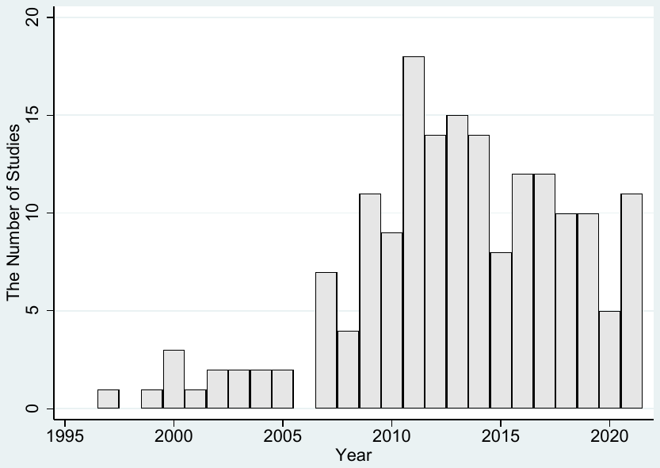
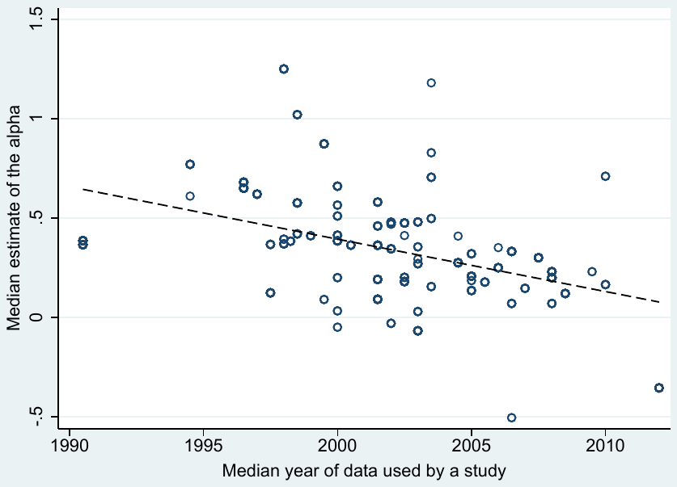

What Matters in Explaining the Variation in Hedge Fund Performance?
Fan Yang, Tomas Havranek, Zuzana Irsova, and Jiri Novak (2026), "What Matters in Explaining the Variation in Hedge Fund Performance?" Charles University, Prague. Available at meta-analysis.cz/alphas.
Fan Yanga, Tomas Havranekb,d,e, Zuzana Irsovab,c, Jiri Novakb,*
a Prague University of Economics and Business, W. Churchill Sq. 1938/4, Prague, 130 67, Czech Republic
b Charles University, Institute of Economic Studies, Opletalova 26, Prague, 110 00, Czech Republic
c Anglo-American University in Prague, Letenska 120/5, Prague 1, 118 00, Czech Republic
d Centre for Economic Policy Research, 2 Coldbath Square, London, EC1R 5HL, United Kingdom
e Meta-Research Innovation Center at Stanford, Stanford University, Stanford, CA 94305, United States
*Corresponding author. Tel.: +420 222 112 314.
Email addresses: fan.yang@vse.cz (Fan Yang), tomas.havranek@fsv.cuni.cz (Tomas Havranek), zuzana.irsova@fsv.cuni.cz (Zuzana Irsova), jiri.novak@fsv.cuni.cz (Jiri Novak)
Abstract
We examine the ability of 34 context-related variables to explain the variation in reported estimates of hedge fund performance. Using 1,019 "alphas" collected from 74 empirical studies, we identify 9 consistently important variables. We also quantify the impact of management and performance fees. Synthesizing this extensive empirical evidence, we show that when considering the fees and the variation in research designs, the current estimates of expected alphas implied by the best practice methodology are close to zero for all common hedge fund strategies. Our paper helps evaluate the robustness of prior propositions on hedge fund performance and reconcile some previous seemingly contradictory findings.
Keywords: Hedge funds, alpha, fees, meta-analysis, model uncertainty
JEL: C83, G12, G28
1. Introduction
The economic prominence of hedge funds has grown dramatically over the past few decades. Stulz (2007) and Barth et al. (2020) document that assets under management (AUM) in hedge funds have increased approximately one hundredfold since the early 1990s. This rapid growth, along with the economic impact of several high-profile hedge fund failures, has drawn considerable attention to how hedge funds operate and spurred extensive empirical research analyzing how much value they generate for investors and how their ability to generate return depends on various fund and market characteristics (Connor and Woo, 2004; Stulz, 2007). Figure 1 illustrates a steep increase in the number of research articles on hedge funds published in five leading finance journals.
Prior empirical studies differ in their data coverage, the use of performance metrics, estimation methodology, and several other fundamental characteristics. Most hedge funds take advantage of favorable regulatory requirements that do not oblige them to periodically report their performance to the regulators. Consequently, prior empirical studies are mostly based on selected commercial databases that contain data on a subset of relevant hedge funds. Furthermore, hedge funds frequently engage in complex and dynamically evolving investment strategies, which makes it challenging to adequately adjust for all risk exposures their holdings entail (Fung and Hsieh, 2001, 2004b; Fung et al., 2008). Individual empirical studies differ in how they adjust for these risk exposures. Prior studies also employ various estimation methodologies. This heterogeneity may matter for the magnitude of the reported estimates. As a result, the range of published hedge fund performance estimates is quite broad, and reconciling the findings across studies can be challenging.

In this paper, we perform a systematic analysis of prior empirical evidence on hedge fund performance. We use intercept terms from regressions of realized returns on risk factors — commonly referred to as "alphas" — as a proxy for hedge fund performance. Alphas represent risk-adjusted returns that account for the various factor exposures of hedge fund investment strategies. They are widely used in both the academic literature and industry practice to assess the value that hedge funds generate for their investors. We base our study on 1,019 alphas that we collect from 74 empirical studies published between 2001 and 2021. We use several state-of-the-art meta-analytical techniques that allow us to adjust the reported estimates for potential reporting and publication biases and exploit heterogeneity in relevant investment-type, time-related, and research-design characteristics. These characteristics may be interrelated, and their correlation with the reported alphas documented in prior empirical research may be driven by similar underlying causes. We contribute to prior research by simultaneously considering the multitude of these characteristics, testing them jointly, and identifying those that are most relevant for explaining the variation in reported estimates of hedge fund performance. We also quantify the impact of these characteristics on reported alphas using a large pool of published estimates.
We document that 9 out of the 34 characteristics we analyze are consistently relevant to explain the variation in the reported estimates. Hedge fund alpha estimates tend to be lower when (i) adjusted for the backfilling bias, (ii) estimated for the fund-of-funds, (iii) estimated based on the 1-factor model, (iv) estimated for the declining "bear" markets, (v) based on more source databases, and (vi) based on data sourced from databases other than the Morningstar Center for International Securities and Derivatives Markets database (CISDM).
We also quantify an economically large effect of the management and performance fees that hedge funds charge their investors. After controlling for other factors that may affect the value generated by hedge funds, our results suggest that monthly alphas reported on a net-of-fee basis are, on average, 0.439 percentage points lower than alphas based on gross returns. In other words, hedge funds appear to charge their investors more than 5 percentage points annually. These fees effectively absorb all of the gross risk-adjusted returns generated by hedge funds. By synthesizing this extensive body of prior empirical evidence, we show that, after accounting for hedge fund fees and adjusting for their risk exposures, current estimates of hedge fund alphas implied by our best-practice specification are close to zero across all major hedge fund strategies.
Performing a systematic analysis of prior empirical evidence is also worthwhile because estimating hedge fund performance is complicated by a number of methodological challenges that may have an impact on the reported results. Published estimates may be distorted by the survivorship and backfilling biases (Fung and Hsieh, 2000, 2002, 2004b; Fung et al., 2008). The backfilling bias arises when hedge funds are included in databases together with their performance history only after succeeding during an "incubation period" intended to accumulate a performance track record before offering the fund to investors. Backfilling performance histories of successful funds introduces a positive bias into the database since the performance of the funds that did poorly in the incubation period is never recorded in the database (Fung and Hsieh, 2000; Posthuma and Van der Sluis, 2003). Jorion and Schwarz (2019) develop a correction method for this bias and argue that ignoring the bias may artificially inflate the estimated abnormal returns estimates by as much as 4% per annum.
The survivorship bias may arise when commercial databases terminate coverage of previously included funds. Providers may wish to purge the database of funds that ceased operation because they are no longer relevant to their clients (Edelman et al., 2013; Getmansky et al., 2015). Hodder et al. (2014) report that on average 15% of hedge funds exit the database every year. A bias arises when the funds that exit the database on average underperform the "surviving" funds. Prior studies differ in the way they address these biases, which may affect the performance estimates they report.
Fung and Hsieh (2000), Fung and Hsieh (2002), and Fung et al. (2008) argue that the impact of the backfilling and survivorship biases may be mitigated by using data on the funds of hedge funds (FoFs) because hedge funds included in FoFs must be, by definition, investable at any given time. Thus, FoFs' returns should adequately reflect even returns of funds that choose not to report their performance to commercial databases and those that cease to exist at some point in time (Posthuma and Van der Sluis, 2003). However, while these are valid arguments, using FoFs' returns generates new problems. FoFs endogenously decide what hedge funds to include in their holdings, which implies that the funds they hold may not be representative of the entire hedge fund population. Furthermore, FoFs charge investors an additional layer of management and performance fees (Stulz, 2007) that reduce the realized return, which may distort the quantification of the abnormal return generated by individual hedge funds (Amin and Kat, 2003a). Brown et al. (2005) find that due to the extra layer of fees, individual funds actually dominate FoFs in terms of net-of-fee returns, which makes FoFs unattractive to investors. Getmansky et al. (2015) observe a decline in the number of FoFs over time, which the authors ascribe to their fee structure, competition from multi-strategy funds, and their limited ability to protect investors from losses during financial downturns. Due to these considerations, it is questionable how good a proxy of individual hedge funds' performance FoFs actually are.
In this paper, we offer an alternative approach to quantifying the impact of these biases by exploiting the heterogeneity across published estimates. Our meta-analysis methodology allows us to simultaneously consider both the alphas estimated for FoFs and other methods of adjusting for these biases to observe their impact on the empirical results. Consistent with the proposition that these biases are consequential, our results show that reported alpha estimates tend to be significantly lower when the primary study's research design uses conventional approaches of adjusting for the backfilling bias. Furthermore, we also observe lower alpha estimates for FoFs. Both findings support the notion that backfilling historical returns has a substantial impact on the reported results, and that various empirical strategies for adjusting for these biases significantly affect the findings and their interpretation. Consequently, empirical evidence from studies that do not adjust for these biases should be interpreted with caution.
Furthermore, one of the major challenges in measuring hedge fund performance is the choice of the appropriate risk model. Hedge funds frequently engage in complex and dynamically evolving investment strategies. Thus, they may exhibit exposures to fundamental risk factors that differ from those that are typical for more conventional asset classes, such as common equities and fixed-income securities. Hence, accurately measuring the abnormal returns they generate is not trivial (Bali et al., 2013). Fung and Hsieh (2001, 2004b); Fung et al. (2008) propose a risk model that is specifically designed to capture risk exposures relevant to hedge funds. Given that this model was explicitly designed for hedge funds, it is plausible to expect it to most accurately capture the risk factors relevant to investment strategies commonly used by hedge funds. Nevertheless, the specificity of this model for hedge fund research also implies that results based on it are not directly comparable to performance estimates of other investment forms, such as mutual funds. Thus, prior hedge fund research frequently reports alpha estimates based on several other asset pricing models, such as the Capital Asset Pricing Model (CAPM) (Sharpe, 1966; Lintner, 1965; Mossin, 1966; Black, 1972), the three-factor model (Fama and French, 1993, 1996), and the four-factor model (Carhart, 1997). Our results show that the choice of the risk model matters for estimating how much value hedge funds actually create.
Our results also show that the estimates of the value created by hedge funds depend on the market conditions. Hedge funds sometimes aspire to be "market neutral", i.e., to generate fairly stable returns regardless of the general stock market conditions. Market neutrality should be valued by investors because robust returns during market downturns help investors diversify away risks. Nevertheless, empirical research does not provide strong support for hedge funds' market neutrality (Capocci et al., 2005; Patton, 2009). We document that, when considering a large sample of performance estimates, hedge fund alphas tend to be lower when estimated for the declining "bear" markets, which helps assess the generalizability of this proposition.
Measurement of hedge fund performance is further complicated by data limitations. The light regulatory framework does not oblige many hedge funds to report their performance to the regulators. Many prior studies thus rely on data from selected commercial databases that hedge funds choose to report at their discretion. If funds decide to report performance strategically, this sample may not be representative of the general population (Agarwal et al., 2013; Fung and Hsieh, 2000; Jorion and Schwarz, 2014). Prior research suggests that using such samples may lead to biased inferences (Aiken et al., 2013; Edelman et al., 2013). In this paper, we systematically analyze how the reported estimates of hedge fund performance vary with researchers' choices of source databases. We observe that reported hedge fund alpha coefficients tend to be lower when more databases are used as data sources in a given primary study, and when the CISDM is not used as one of the data sources. These findings suggest that using more comprehensive datasets typically results in lower hedge fund performance estimates. Furthermore, researchers should be aware that alpha estimates derived from the CISDM database are often higher than those from other databases.
We also use the large sample of performance estimates to quantify the impact of the management and performance fees. It is well-recognized that hedge funds charge their investors substantial fees. Ben-David et al. (2020) estimate that, on average, hedge funds appropriate in fees almost two-thirds of the excess return they generate. Prior literature also suggests that in alternative investments and private markets these fees are difficult to quantify due to their conditional nature (Agarwal et al., 2009b; Goetzmann et al., 2003; Lim et al., 2016). We offer an alternative way of estimating the effect of these fees by exploiting the composition of our sample that includes both alphas estimated using gross returns and alphas estimated net of fees. Our indicator variable captures the effective impact of hedge fund fees after controlling for all other relevant characteristics that affect the magnitude of reported alpha estimates.
Our regression analysis shows that the indicator variable that captures whether hedge fund performance is estimated on a gross or a net-of-fee basis is the most powerful variable explaining the variation in the reported alpha coefficients. We show that, on average, monthly alphas reported on the net-of-fee basis are 0.439 percentage points lower than alphas based on gross returns. This implies that management and performance fees indeed have a substantial impact on the value hedge funds generate for their investors.
In addition, we observe a strong downward trend in the reported alphas over time. We visualize the trend in Figure 2. The figure shows the me- dian hedge fund alpha reported in a given primary study against the median year of the data used in the study. The unconditional sample mean of all alpha estimates is equal to 36 basis points (i.e., 0.36%) on a monthly basis, which corresponds to the annual abnormal return of 4.32% (= 0.36% ∗ 12). The positive mean alpha that we observe is broadly consistent with values reported in prominent prior studies on hedge fund performance (Fung and Hsieh, 2001; Getmansky et al., 2015). However, the dashed line in Figure 2 showing the downward-sloping trend crosses the horizontal axis around the year 2015. This suggests that estimates of hedge fund performance based on data samples with a median year greater than 2015 are, on average, negative. In our subsequent analysis, we benefit from the meta-analysis methodology that allows us to consider a number of potentially relevant explanatory variables and conclude that the downward trend persists even after controlling for a host of research design characteristics (see Table 3), which suggests that it is driven by changing economic fundamentals that shape how hedge funds operate, rather than by improvements in the methodology used to measure hedge fund performance.
Several prior empirical studies investigate how hedge fund performance changes over time (Ammann and Moerth, 2005; Bali et al., 2013; Bollen et al., 2021; Edelman et al., 2012; Fung et al., 2008; Gao et al., 2022; Getmansky et al., 2015; Jagannathan et al., 2010; Kauppila, 2022; Kosowski et al., 2007; Mozes and Steffens, 2016; Sullivan, 2021). These studies consider several potential explanations for the observed changes in hedge fund performance,

Note: The vertical axis shows the median estimate of the alpha (hedge funds' excess return) reported in individual studies. The horizontal axis shows the median year of the data used in the studies. The dashed line denotes a linear trend. Outliers are omitted from the figure for ease of exposition but are included in all tests.
including decreasing returns to scale that make it progressively more difficult for hedge funds to generate abnormal returns when they manage larger amounts of capital (Berk and Green, 2004; Fung et al., 2008), liquidity and growing hedge fund sizes (Ding et al., 2009; Fung et al., 2002; Mozes and Steffens, 2016), central bank interventions in financial markets following the 2008 financial crisis that made the implementation of some hedge fund strategies more challenging (Barth and Kahn, 2021; Bollen et al., 2021), higher compliance costs and the increased regulatory oversight due to the 2010 Dodd–Frank Act (Bollen et al., 2021; Cumming et al., 2020; Restrepo, 2024), and more efficient handling of potential biases in research databases (Bollen et al., 2021; Fung and Hsieh, 2000; Kauppila, 2022; Posthuma and Van der Sluis, 2003). To better evaluate these competing explanations, it is worthwhile to examine how the changes in hedge fund performance vary with hedge fund types, research methodologies, and data samples.
We complement the research literature above by performing a multivariate analysis that includes the median data sample year as one of the explanatory variables. We document that the general downward trend in hedge fund performance persists even after adjusting for potential reporting biases and simultaneously controlling for heterogeneity in hedge fund characteristics and research design choices. We show that the estimated current net-of-fees alpha implied by the best practice methodology used in the literature is not reliably different from zero. Furthermore, we perform a conditional analysis and investigate the strength of the declining trend depending on several key characteristics. We classify hedge funds into common categories based on their investment strategies and we observe that the current performance estimate implied by best practice methodology is not significantly positive for any of these categories. Thus, our results suggest that while hedge funds have generated positive value for investors in the past, on average, they no longer do so.
We make several important contributions to the prior research literature. First, we document a systematic decline in hedge fund performance over time that applies to all common hedge fund categories and prevails even after controlling for reporting biases, hedge fund characteristics, and research design choices. This finding is consistent with the proposition that the intensified competition among hedge funds diminished their ability to generate value for their investors, in line with the prediction of a rational model of active portfolio management proposed by Berk and Green (2004). The model suggests that managers differ in their ability to identify profitable investment opportunities and that, with decreasing returns to scale, the likelihood of generating abnormal returns decreases with the volume of resources invested in a given fund. The increasing volume of resources managed by hedge funds may have eroded their ability to identify profitable investment opportunities and earn abnormal returns for their investors. These findings also support Eugene F. Fama's famous quote1 that suggests that if financial markets are reasonably efficient, active investment management by hedge funds cannot be expected to generate abnormal returns for investors in the long run.
It is also possible that the decrease in hedge fund abnormal performance is due to progressively tighter hedge fund regulation that eroded their competitive edge. Some considered hedge funds one of the culprits of the 2008 global financial crisis (Fagetan, 2020). New regulations enacted in the aftermath of the crisis requested greater transparency with the intention to facilitate their monitoring and alleviate the agency problems. In the US, the government proposed the Dodd–Frank Act in 2009, and the registration and greater disclosure requirements became effective in 2012. The EU implemented the Alternative Investment Fund Managers Directive (AIFMD) in 2012. Nevertheless, greater transparency may also reveal some of the funds' proprietary information, make it easier for free riders to imitate successful investment strategies, make it more difficult for hedge fund strategies to reap the benefits of their ideas, and ultimately dilute managerial incentives to innovate (Bianchi and Drew, 2010; Shi, 2017). Furthermore, the new regulation may entail a significant compliance cost that may further depress hedge fund performance (Kamal, 2012; Cumming et al., 2020).
Second, we also contribute to the prior research literature by introducing an alternative approach to estimating the impact of the management and performance fees that hedge funds charge for the value they generate for their investors. These fees tend to be difficult to quantify because their magnitude may depend on a fairly complex set of conditions agreed upon by the investors. Our methodological approach allows us to measure the effective impact these fees have on the realized hedge fund performance and quantify how they affect the value hedge funds generate for their investors.
Third, we identify several research design choices in the primary studies and other conditions that systematically affect the magnitude of the reported hedge fund alphas. In particular, we show that the estimated alpha coefficients depend on the choice of the asset pricing model. They also depend on the general market conditions during which hedge fund performance is measured. Furthermore, we also show that the reported hedge fund performance estimates are sensitive to the choice of data sources. The reported coefficients tend to be lower when more databases are used as data sources and are, on average, higher when the CISDM database is used as one of the sources. These findings help researchers and practitioners interpret prior empirical findings and inform them about the likely impact of their methodology and sample choices in future research.
2. Literature
In the Online Appendix, we discuss the institutional background concerning hedge funds. We conclude that a priori, it is not clear whether hedge funds should be expected to outperform other investment forms. On the one hand, hedge funds may take advantage of favorable regulatory requirements and remain relatively secretive, which allows them to implement innovative investment strategies and take risks that would otherwise be untenable. They may also identify assets that are likely to appreciate in value and trade on fundamental information, thereby generating abnormal returns (Connor and Woo, 2004; Stulz, 2007; Brown et al., 2018; Li et al., 2022). On the other hand, their limited transparency may complicate monitoring by investors, limit managerial accountability, and the substantial management and performance fees may consume much of the return they generate (Ben-David et al., 2020). Their risky positions may make them vulnerable to liquidity squeezes (Stulz, 2007). This controversy motivated extensive prior empirical research on hedge fund performance and their role in financial markets. Figure 1 demonstrates the increased interest in examining hedge fund performance over the past two decades. This extensive empirical research produced a wide range of estimates of the value hedge funds generate for their investors. Some of the variation in the published estimates likely arises due to the use of different data samples, time periods, methodological approaches, or the differential impact of biases that may affect various estimates.
A commonly voiced concern related to the measurement of hedge fund performance concerns the deviations from normality in the distribution of hedge fund returns (Malkiel and Saha, 2005). Several studies explicitly address this issue. Agarwal and Naik (2004) document a significant left-tail risk in a wide range of hedge fund strategies. To account for this left-tail risk, they develop a conditional value-at-risk framework, which shows that the conventional mean-variance measures may underestimate expected left-tail losses by more than half. Amin and Kat (2003a) use an approach that does not require specific characteristics of the underlying returns distribution, and they conclude that the vast majority of individual funds and indices are inefficient relative to the general market index. Also Bali et al. (2013) use an approach that accommodates the non-normality in returns distribution. Out of eleven hedge fund indices they consider, they find outperformance only for two of them – the long-short equity and emerging markets hedge fund indices. In a similar vein, Agarwal et al. (2009a) document that hedge funds are exposed to the risks associated with the higher moments of their returns distribution and that adjusting for this exposure substantially reduces the observed abnormal performance, especially for equity-based hedge fund strategies.
Another research stream investigates the dependence of hedge fund performance on macroeconomic conditions. Bali et al. (2011) report that hedge funds with higher exposure to default risk premium and lower exposure to inflation earn higher returns. Avramov et al. (2013) consider four variables related to the macroeconomic conditions: the default spread, the dividend yield, the volatility index (VIX), and the aggregate fund flows into hedge funds, and they show that they predict future hedge fund returns. Similarly, Agarwal et al. (2017) measure hedge funds' exposure to uncertainty about aggregate volatility, and they show that funds with low exposure to this uncertainty outperform those with high exposure. Building on these findings that underscore the relevance of macroeconomic conditions for hedge fund performance, Bali et al. (2014) include measures of macroeconomic uncertainty directly in the risk model used to measure hedge fund performance, and they demonstrate the relevance of most of the macroeconomic factors in this setting. Dragomirescu-Gaina et al. (2021) further show that uncertainty shapes hedge fund managers' speed–accuracy trade-off, which can improve timing in turbulent markets but weaken profitability in calmer periods.
Related to the macroeconomic conditions, other papers also examine how hedge fund performance depends on conditions in financial markets. Hedge funds sometimes aspire to be "market neutral", i.e., generate fairly stable returns regardless of the general market conditions. Nevertheless, prior empirical research does not provide strong support for hedge funds' market neutrality. Capocci et al. (2005) examine hedge fund performance in bull and bear markets, and they conclude that hedge fund outperformance is concentrated in periods of rising markets. Patton (2009) considers five different ways of measuring market neutrality, and he concludes that hedge fund returns tend to be positively correlated with market returns. The author also finds that about one-quarter of funds classified in the market-neutral style exhibit substantial exposure to market risk. Consistent with this evidence, Noori and Hitaj (2023) show that hedge fund strategies remain dynamically connected to broader financial market conditions.
Another reason for the diversity in the reported results may be the data deficiencies that may arise due to the voluntary nature of the reporting of hedge fund performance in hedge fund databases that may bias the data samples available to researchers. A self-selection bias arises when successful hedge funds are more likely to report their performance to commercial databases. However, it is not obvious that better-performing funds are always more inclined to report their performance to commercial databases. Some very successful hedge funds may avoid reporting to databases to prevent disclosing clues about their proprietary trading strategies. Furthermore, well-performing hedge funds may reach their capacity limits and they may not seek any additional capital inflows. Such hedge funds may stop reporting performance to databases because they no longer have incentives to advertise themselves among investors (Ackermann et al., 1999). Jorion and Schwarz (2014) indeed find that investment companies act strategically and they list in multiple commercial databases their small, best-performing funds, which helps them raise awareness about the funds and attract new investments (Fung and Hsieh, 1997, 2000).
Agarwal et al. (2013) examine the impact of self-selection bias by comparing data in five commercial databases with information in Form 13F that are reported quarterly by advisors (rather than funds) with the Securities and Exchange Commission (SEC). They find that even though reporting initiation is more likely after a superior performance, it subsequently declines. They conclude that the differences in performance between the reporting and non-reporting funds are small. Similarly, Edelman et al. (2013) combine previously unexplored data sources with manual data collection to construct a comprehensive dataset of returns earned by large hedge fund management companies. Based on the sample covering more than half of the industry's AUM they observe little differences between the reporting and non-reporting firms. In contrast, Aiken et al. (2013) use the mandatory regulatory filings by registered funds that are obliged to report their holdings in individual hedge funds. They observe that only about one-half of these fund-level returns are reported to one of the five major hedge funds databases. Comparing the two subsamples they observe that non-database funds significantly underperform funds that report their performance to one of the databases. The result seems to be driven by the left tail of the returns distribution, that is, by funds in decline that quit reporting to databases before their performance further deteriorates.
The backfilling bias or the “instant-history bias” arises when hedge funds are included in databases together with their performance history only after succeeding during an “incubation period” intended to accumulate a performance track record before offering the fund to investors. Recording performance histories of only the successful funds introduces a positive bias into the database (Fung and Hsieh, 2000; Posthuma and Van der Sluis, 2003). To quantify its effect prior research compares returns generated in the first years of hedge fund existence in the database with other years. Estimates based on this approach range between 1.0% and 1.5% per annum (Fung and Hsieh, 2000; Edwards and Caglayan, 2001). Posthuma and Van der Sluis (2003) access additional information on the length of the incubation period in the TASS database and they find the bias to be more prevalent and significant. They observe that a typical incubation period lasts for about 3 years. They also find that more than half of the recorded returns are backfilled, which results in a bias of about 4% per annum.
To mitigate the effect, prior research sometimes eliminates the first year of data that are most likely to be affected by the backfilling bias (Kosowski et al., 2007; Teo, 2009; Avramov et al., 2011). Nevertheless, Fung and Hsieh (2009) argue that this approach is problematic. The length of the incubation period may differ greatly and the information on funds’ inception dates may be unreliable or missing in the databases. Some hedge funds may also enter the sample due to database mergers. Hence, removing the first year of observations is a rather blunt instrument that also results in a substantial loss of data and impairs the power and generalizability of empirical tests. Similarly, Jorion and Schwarz (2019) suggest that truncating early returns does not resolve the backfilling bias and it can lead to misleading conclusions. They recommend removing returns prior to the listing date and they propose an approach of inferring these dates when they are missing in the database.
The survivorship bias may arise when commercial databases terminate coverage of previously included funds. Providers may wish to purge the database of funds that no longer operate because they are not relevant to their clients anymore. Hodder et al. (2014) report that on average 15% of hedge funds exit the database every year. A bias arises when the funds that exit the database on average underperform the “surviving” funds. Edelman et al. (2013) and Getmansky et al. (2015) argue that two types of hedge funds are likely to stop reporting their performance to databases: those that are no longer attractive to investors and those that do not seek to attract new investors anymore. Funds that approach liquidation after having incurred substantial losses and experiencing an outflow of funds by investors lack the incentive to continue reporting their performance because they are no longer attractive to investors. On the other hand, well-performing funds that approach their capacity limit and no longer seek additional capital inflows also have incentives to quit reporting their performance to databases. Hence, the impact of survivorship bias in the context of hedge funds is not a priori obvious.
Prior research points toward regularities in eliminating hedge funds from databases. Fung and Hsieh (2000) observe that 60% of defunct funds are liquidated whereas 28% are removed from the database because the managers stopped reporting return information. To estimate the performance of successful funds that may exit the database due to capacity constraints, Edelman et al. (2013) compare performance of large non-reporting funds identified through an industry survey with funds of comparable size that do report their performance to one of the commercial databases. They observe fairly similar performance for both groups. These findings suggest that databases likely overstate true hedge fund performance. Brown et al. (1999) examine survivorship bias in a database of active and defunct offshore funds and observe positive risk-adjusted returns even after adjusting for the bias. Liang (2000) observes that poor performance is the main reason for a fund’s disappearance from the databases and finds that the survivorship bias exceeds 2% per annum and it varies with investment styles. Edwards and Caglayan (2001) compare the performance of defunct funds with those that are still in operation and they estimate the impact of the bias at 1.85% per annum. Similarly, Amin and Kat (2003b) estimate the impact of the survivorship bias to be around 2.0% per annum on average, but substantially higher for small, young, and leveraged funds (between 4.0% and 5.0%). Fung et al. (2006) estimate the impact of the survivorship bias at 1.8% and 2.4% per annum. In comparison, Agarwal et al. (2015) propose a range between 2.0% and 3.6% per annum. They also state that the bias varies across databases, sample periods, and fund characteristics.
The survivorship bias may be expected to decrease over time as databases improve the consistency of their coverage and retain historical data. However, even databases that retain the data for defunct funds may be contaminated by the delisting bias or liquidation bias. Aiken et al. (2013) find that about half of the hedge funds continue to operate two years after the delisting date and their returns are 1.8% lower than returns of funds that continue reporting their performance to the database. Edelman et al. (2013) argue that the reliability and consistency of performance data provided by hedge funds approaching liquidation often deteriorates, which may prompt data vendors not to record them due to questionable reliability. This implies that even databases that include records for the “dead” funds may miss some of the last performance data that tend to be rather poor. Hodder et al. (2014) use estimated portfolio holdings for funds-of-funds and they estimate the average delisting return for all hedge funds of –1.61%. They also find that the negative delisting return is substantially larger for funds with poor prior performance and with no clearly stated delisting reason. Other studies estimate the impact of missing delisting returns on estimates of average hedge fund performance. Edelman et al. (2013) estimate the magnitude of the delisting bias at a modest 0.02% per annum. Jorion and Schwarz (2013) exploit the differences in the timing of hedge fund delisting from various databases and estimate the impact of the bias to be at least 0.35% per annum. They suggest that hedge fund indices should be adjusted downward by 0.5% per annum to adjust for the effect.
Given the heterogeneity in the above estimates, we consider it worthwhile to aggregate and synthesize extensive prior empirical research findings, adjust them for potential publication selection bias, and perform a multivariate analysis that jointly considers numerous explanatory variables that may explain the variation in the reported hedge fund performance estimates.
3. Data
Hedge fund performance is commonly measured by the intercept terms (the “alphas”) from regressions of hedge fund returns on risk factors, see Equation 1.
where denotes the realized return on portfolio , denotes the risk-free rate of return, represents the intercept term, represents the -th risk factor, denotes the sensitivity of portfolio to the -th risk factor, and represents the error term. The factor models adjust portfolio returns for exposure to systematic risk. The alphas that represent the unexplained portion of the realized return may thus be interpreted as the “abnormal” returns that hedge funds earn for their investors.
Various factor models differ in the set of factors they consider. Thus, the alpha estimates obtained based on the different models may also vary. The simplest approach based on the Capital Asset Pricing Model (CAPM) (Sharpe, 1966; Lintner, 1965; Mossin, 1966; Black, 1972) uses the difference between the stock market return and the risk-free rate as the only risk factor. Notwithstanding the conceptual appeal this approach has, since it models the expected excess return based on an asset’s contribution to the overall portfolio risk, which should correctly reflect the relevant risk exposure of well-diversified investors, prior research establishes that the single risk dimension might be too restrictive in capturing all the relevant risk exposures. Thus, the three-factor model (Fama and French, 1993, 1996) and the four-factor model (Carhart, 1997) are frequently proposed as more comprehensive alternative approaches to capturing the systematic risk. Furthermore, due to the complexity of measuring a risk exposure in hedge funds that frequently engage in complex and dynamically evolving investment strategies, Fung and Hsieh (2004b) propose a model featuring seven factors that are particularly relevant for risk exposures that common hedge fund strategies involve. These seven dimensions involve (i) the stock market excess return, (ii) the spread between the small-capitalization and large-capitalization stock returns, (iii) the excess return pairs of look-back call and put options on currency futures, (iv) on commodity futures, and (v) on bond futures, (vi) the duration-adjusted change in the yield spread of the U.S. 10-year Treasury bond over the 3-month T-bill, and (vii) the duration-adjusted change in the credit spread of Moody’s BAA bond over the 10-year Treasury bond.
Beyond choosing among these common risk factor models, some primary studies use additional measures that capture additional sources of risk, such as liquidity-related characteristics, volatility, or uncertainty measures. Since these extensions are less common and less standardized across individual studies than the canonical factor models, in our meta-analysis, we do not code these specifications into separate risk-adjustment categories. Instead, we group them according to the broader characteristics of the regression models used in the primary studies. Wherever applicable, these additional features of regression specifications may be reflected in other indicator variables that we use to characterize more general estimation characteristics.
We collect our sample of hedge fund alphas from peer-reviewed research articles published between January 1, 2001, and September 1, 2021. The alpha estimates are the intercept terms from regressions of hedge fund returns on risk factors. The alphas represent risk-adjusted returns generated by hedge funds, which makes them comparable and suitable for aggregation by means of a meta-analysis. We use monthly alphas, expressed as a percentage, as our key variable of interest. For example, an alpha of 0.36 refers to a monthly alpha of 0.36%, which corresponds to an annual abnormal return of 4.32% . The slope coefficients of the indicator variables in our regressions can thus be interpreted as percentage-point differences in monthly alphas. When a primary study reports annual or quarterly alphas, we convert them to a monthly frequency by dividing them by twelve or three, respectively. We consider only published estimates as these successfully cleared the peer-review process that assures the quality of published findings. This increases the likelihood that the alphas we consider are estimated using established methodologies and free of error. In addition, estimates published in academic journals likely represent empirical evidence that is most influential in shaping the views of investment professionals and academics on hedge fund performance.
Our procedure of identifying primary studies, from which we source the alpha estimates, follows the guidelines proposed by Havranek et al. (2020). We outline the procedure in Figure A1. First, we consider studies cited in two prominent reviews of empirical research on hedge fund performance: Connor and Woo (2004) and Agarwal et al. (2015). We then perform a systematic Google Scholar search based on the following combinations of keywords: “hedge fund returns” OR “hedge fund performance”. To ensure that our search has a good coverage of relevant articles we verify that the used combination of keywords identifies the vast majority of studies cited in the two above-mentioned review articles. We go through the first 750 articles in the Google Scholar list and we manually collect hedge fund alpha estimates reported in them. We terminate our screening of primary studies after having covered the first 750 articles from the Google Scholar list because we observe that after this point, the relevance of articles substantially decreases and the likelihood of finding additional usable alpha estimates is rather small in articles further down in the list.
We further complement our main keyword search with another search that is more general in the combination of used keywords: “hedge fund” OR “hedge funds”, and that is limited to five journals where empirical research on hedge fund performance is likely to be published: the Journal of Finance, the Journal of Financial Economics, the Review of Financial Studies, the Journal of Financial and Quantitative Analysis, and the Review of Finance. Finally, to ensure comprehensive coverage of estimates published in journals aimed primarily at investment professionals, we perform a third search using the following keywords: “hedge fund” OR “hedge funds” in the journals listed on the Portfolio Management Research website2: the Journal of Portfolio Management, the Journal of Financial Data Science, the Journal of Impact and ESG Investing, and the Journal of Fixed Income.
In our multivariate analysis, we build on Yang et al. (2024), who investigate the impact of the publication selection bias in hedge fund research, and we control for selectivity in reporting alpha coefficients. This requires a measure of the precision of collected alpha estimates. Consequently, we only collect alpha estimates accompanied by a measure of statistical significance, i.e., a -statistic, a standard error (), and/or a -value. When more than one measure of statistical significance is provided, we apply the following procedure. We collect corresponding -statistics directly from the primary studies whenever available. When standard errors are reported, we compute the -statistic by dividing the alpha by its standard error. Correspondingly, in Bayesian studies, we approximate the -statistic by dividing the alpha by its standard deviation. When a primary study reports -values, we check if the paper discusses whether these are based on one-tailed or two-tailed tests. When the information on the type of the test is not explicitly stated, we try to infer it from the discussion of the statistical significance of reported results. We assume a two-tailed test whenever the type of the test cannot be ascertained from the discussion of statistical significance (1 study). We manually verify that all the coefficients with the implied -statistic greater than 10 are referred to as highly significant in the text of primary studies. We discard 1 observation with a reported -statistic greater than 50.
Table 1 provides a list of 74 primary studies identified by our data collection procedure. From these research articles we collected 1,019 alpha estimates that constitute the sample for our empirical analysis. The number of data points makes our study one of the largest meta-analyses in finance. The substantial number of primary studies on this topic and the number of reported alpha coefficients imply that hedge fund performance has been extensively studied in prior research and the alpha coefficients have been estimated in a variety of ways with the use of various data samples. It thus seems worthwhile to aggregate the results from diverse studies by means of a meta-analysis.
Figure 3 shows a histogram of the alpha estimates that constitute our sample. Consistent with the expectations, the distribution approaches nor-
| Agarwal et al. (2017) | Edelman et al. (2013) | Malladi (2020) |
|---|---|---|
| Ahoniemi and Jylha (2014) | Edwards and Caglayan (2001) | Meligkotsidou and Vrontos (2008) |
| Aiken et al. (2013) | Eling and Faust (2010) | Mitchell and Pulvino (2001) |
| Ammann and Moerth (2005) | Frydenberg et al. (2017) | Mladina (2015) |
| Ammann and Moerth (2008a) | Fung and Hsieh (2004b) | Molyboga and L’Ahelec (2016) |
| Ammann and Moerth (2008b) | Fung and Hsieh (2004a) | Mozes (2013) |
| Aragon (2007) | Fung et al. (2002) | Patton and Ramadorai (2013) |
| Asness et al. (2001) | Fung et al. (2008) | Racicot and Theoret (2009) |
| Bali et al. (2013) | Gupta et al. (2003) | Racicot and Theoret (2013) |
| Bhardwaj et al. (2014) | Hong (2014) | Racicot and Theoret (2014) |
| Blitz (2018) | Huang et al. (2017) | Ranaldo and Favre (2005) |
| Bollen and Whaley (2009) | Ibbotson et al. (2011) | Diez De Los Rios and Garcia (2011) |
| Brown (2012) | Jame (2018) | Rzakhanov and Jetley (2019) |
| Buraschi et al. (2014) | Joenvaara and Kosowski (2021) | Sabbaghi (2012) |
| Cao et al. (2016) | Joenvaara et al. (2019) | Sadka (2010) |
| Chen and Liang (2007) | Jordan and Simlai (2011) | Sadka (2012) |
| Chen et al. (2017) | Jylha et al. (2014) | Sandvik et al. (2011) |
| Chincarini and Nakao (2011) | Kanuri (2020) | Stafylas et al. (2018) |
| Clark and Winkelmann (2004) | Klein et al. (2015) | Stafylas and Andrikopoulos (2020) |
| Dichev and Yu (2011) | Kooli and Stetsyuk (2021) | Stoforos et al. (2017) |
| Ding and Shawky (2007) | Kosowski et al. (2007) | Sullivan (2021) |
| Ding et al. (2009) | Kotkatvuori-Ornberg et al. (2011) | Sun et al. (2012) |
| Do et al. (2005) | Liang (2004) | Teo (2009) |
| Duarte et al. (2007) | Ling et al. (2015) | Vrontos et al. (2008) |
| Edelman et al. (2012) | Lo (2001) |
Notes: The table shows the list of 74 primary studies, from which we collect the alpha estimates that constitute our sample.
mality. It is fairly symmetric, smooth, and free of apparent discontinuities, which indicates that our data sample exhibits the expected characteristics. The vertical red line in Figure 3 denotes the unconditional sample mean of monthly alphas expressed as a percentage. The value of 0.36% corresponds to an annual risk-adjusted return of 4.32% (= 0.36% ∗ 12). This number falls within the range of alpha estimates reported in several prominent prior studies on hedge fund performance. For example, the alpha estimates based on the Fung and Hsieh (2001) seven-factor model reported by Getmansky et al. (2015) range from 0.18% to 0.56%. This increases confidence that our sample is not biased and is representative of the population of alpha estimates reported in prior literature.
Figure 3. Distribution of alpha estimates
Notes: The figure depicts a histogram of our sample of 1,019 alpha estimates that we collect from 74 primary studies on hedge fund performance. The vertical red line denotes the sample mean.
At the same time, Figure 3 reveals a substantial variance in the reported alpha coefficients. This suggests that even though the mean value of alpha estimates that we collect from the primary studies falls within the commonly proposed range, the individual reported estimates are quite heterogeneous. Many estimates reported in prior studies substantially deviate from these common values. This suggests that it is worthwhile to aggregate these estimates in a meta-analysis and investigate how the values vary with different hedge fund characteristics and research design choices of individual studies. We perform such an analysis in this paper.
In Figure 4, we first examine how the range of reported alpha coefficients varies across the individual primary studies. The figure shows the median value and the interquartile range for all alpha estimates reported in a given primary study. The variation across these alphas within each study may be due to alternative model specifications, alphas estimated for different hedge fund strategies, or other estimate-specific factors. The whiskers denote the minimum and the maximum values within the 1.5 times the range between the upper and lower quartiles. Figure 4 shows considerable variation in the reported alpha coefficients both within and across studies. While the interquartile ranges for some studies are fairly narrow, other studies exhibit interquartile ranges that exceed 1 percentage point of monthly returns, which corresponds to an annual return of 12%. Furthermore, interquartile ranges of some studies do not cross the vertical line representing the unconditional sample mean of 0.36%, which implies that the alpha coefficients reported in these studies substantially deviate from the values typical in the entire pool of research on hedge fund performance.
In Figure 4, the 74 primary studies are sorted by the median age of the underlying data, with the oldest samples at the top and the newer samples at the bottom of the figure. This figure thus provides the first preliminary evidence suggesting that hedge fund performance declined over time. The interquartile ranges of many of the studies using older samples exceed the unconditional sample mean, while for the more recent studies, the interquartile ranges tend to be below it. We explore the tendency of primary studies based on newer data sets to report lower alphas further in the following analysis.
Figure 4. Reported alphas differ both across and within studies
Notes: The figure depicts the distribution of the alpha estimates in the individual primary studies sorted by the age of the underlying data. The length of each box represents the interquartile range (percentile 25, percentile 75). The vertical line inside the box depicts the median value. The whiskers represent the highest and lowest data points within 1.5 times the range between the upper and lower quartiles. The vertical line denotes sample mean. For ease of exposition, outliers are excluded from the figure but included in all statistical tests.
Figure 5 visualizes the distribution of alpha estimates generated by hedge funds covering various geographic areas. Most of the hedge funds we study are global funds. Thus, unsurprisingly, the median alpha estimate for global funds virtually coincides with the unconditional sample mean. Furthermore, alphas generated by the global funds have a relatively narrow interquartile range that is below 0.5%. This implies that most global funds in our sample generate abnormal annual returns between 0.2% and 0.6%. Similarly, funds that concentrate on the U.S. and Canada have a median return very close to the full sample mean and a fairly narrow interquartile range. Figure 5 also provides some indication that Australian, Indian, Japanese, and Latin American funds tend to generate somewhat lower alphas than their global counterparts. In contrast, Chinese, Korean, East European, Middle-Eastern, and North African funds, on average, generate somewhat higher alphas. However, most of these findings are based on a rather small number of observations. Furthermore, these descriptive statistics do not control for hedge funds’ fundamental characteristics and differences in research design choices that may vary systematically across the primary studies. Thus, these findings should be considered preliminary. We delay drawing stronger conclusions about these characteristics until Section 4, where we perform a comprehensive analysis that investigates the combined effect of these characteristics.
We consider several measures related to hedge fund fundamental characteristics and research design choices in the primary studies that may be relevant for explaining the cross-sectional variation in the value generated by hedge funds. Table A1 provides the definition and descriptive statistics for the explanatory variables that we use in our regression analysis. Since the determinants of hedge fund performance are not a priori known, we consider several “candidate” variables, and we examine how effective various combinations of these variables are in explaining the heterogeneity in the alphas reported in primary studies. For each variable, Table A1 includes the definition, the unweighted mean value (Mean), the standard deviation (SD), and the mean weighted by the inverse of the number of estimates reported per study (WM), which gives all of the 74 primary studies equal weight. Many of our independent variables are indicators, and so the mean values represent the proportion of alpha estimates for which a given variable is coded as 1.
Figure 5. Reported alphas differ across and within regions
Notes: The figure depicts the distribution of the alpha estimates across various geographic scopes covered by hedge funds. The length of each box represents the interquartile range (percentile 25, percentile 75). The vertical line inside the box depicts the median value. The whiskers represent the highest and lowest data points within 1.5 times the range between the upper and lower quartiles. The vertical line denotes sample mean. For ease of exposition, outliers are excluded from the figure but included in all statistical tests.
Consistent with our earlier findings, Table A1 shows that the mean value of the alpha estimates in our sample is 0.362. The mean value does not substantially change when the individual observations are weighted by the inverse of the number of estimates reported per study (WM = 0.365). The distribution of alpha estimates is fairly dispersed, with the standard deviation of 0.477. To adjust for a potential publication selection bias, we collect from the primary studies the alpha estimates’ standard error (SE). Since prior literature shows that estimates based on instrumental variables (IV) tend to be less precise than coefficients estimated using different techniques, which may matter for the extent of publication selection bias (Brodeur et al., 2020), we interact SE with an indicator variable equal to 1 for alpha coefficients estimated using IV.
Table 2 shows summary statistics for groups of alpha estimates determined by our conditioning variables. In the left panel, the individual alpha estimates are weighted equally. In the right panel, the alphas are weighted by the inverse of the number of estimates reported in a given study, which gives each of the 74 primary studies (rather than each of the 1,019 alphas estimates) equal weight in computing the mean value and the 95% confidence interval.
Table 2 shows some variation in the reported alpha estimates based on how the primary study aggregates hedge fund returns. Specifically, treating all estimates in our sample equally, reported alphas for value-weighted hedge fund indices tend to be lower than those documented for individual funds. In contrast, reported alpha estimates for equally weighted hedge fund indices are, on average, somewhat higher. Since returns on value-weighted hedge fund indices are disproportionately driven by the performance of large hedge funds, this finding suggests smaller hedge funds tend to generate larger alphas than larger hedge funds. We consider this finding rather intuitive and consistent with the prediction of a rational model of active portfolio management proposed by Berk and Green (2004) that assumes a differential ability to identify profitable investment opportunities across fund managers, but decreasing returns to scale in deploying these abilities. The model suggests that for any given level of a fund manager’s ability, the likelihood of generating abnormal returns decreases in the volume of resources that these managers allocate. In other words, managers of smaller hedge funds may find it easier to implement their investment strategy because suitable investment targets are easier to identify when the scope of their investment is smaller. Hence, smaller hedge funds may outperform larger funds.
| No. of observations | Unweighted Mean | Unweighted 95% conf. int. | Weighted Mean | Weighted 95% conf. int. | |||
|---|---|---|---|---|---|---|---|
| Aggregation of returns | |||||||
| Individual funds | 175 | 0.385 | 0.326 | 0.444 | 0.317 | 0.263 | 0.370 |
| Equal-weighted funds | 503 | 0.427 | 0.380 | 0.474 | 0.393 | 0.353 | 0.433 |
| Value-weighted funds | 341 | 0.256 | 0.213 | 0.298 | 0.357 | 0.314 | 0.399 |
| Treatment of fees | |||||||
| Net-of-fee returns | 984 | 0.348 | 0.319 | 0.377 | 0.335 | 0.310 | 0.360 |
| Gross returns | 35 | 0.757 | 0.534 | 0.980 | 0.817 | 0.655 | 0.979 |
| Data structure | |||||||
| Cross-section data | 855 | 0.355 | 0.322 | 0.388 | 0.379 | 0.349 | 0.409 |
| Longitudinal data | 164 | 0.401 | 0.345 | 0.456 | 0.324 | 0.271 | 0.377 |
| Source database | |||||||
| Database: default | 537 | 0.343 | 0.309 | 0.376 | 0.301 | 0.272 | 0.330 |
| Database: CST | 256 | 0.218 | 0.166 | 0.271 | 0.273 | 0.229 | 0.316 |
| Database: CISDM | 178 | 0.434 | 0.354 | 0.514 | 0.386 | 0.319 | 0.452 |
| Database: hand-collected | 22 | 0.411 | 0.263 | 0.559 | 0.576 | 0.356 | 0.796 |
| Database: other | 167 | 0.409 | 0.311 | 0.507 | 0.460 | 0.373 | 0.548 |
| Market coverage | |||||||
| Developed markets | 140 | 0.388 | 0.315 | 0.461 | 0.462 | 0.393 | 0.530 |
| World markets | 879 | 0.358 | 0.326 | 0.390 | 0.350 | 0.322 | 0.378 |
| Market conditions | |||||||
| Bull market | 39 | 0.272 | 0.199 | 0.346 | 0.277 | 0.206 | 0.347 |
| Bear market | 39 | 0.103 | -0.006 | 0.211 | 0.097 | -0.007 | 0.201 |
| Hedge fund strategy | |||||||
| Strategy: all funds | 243 | 0.303 | 0.255 | 0.351 | 0.298 | 0.258 | 0.339 |
| Strategy: equity hedge | 229 | 0.352 | 0.286 | 0.418 | 0.360 | 0.296 | 0.424 |
| Strategy: event driven | 113 | 0.474 | 0.378 | 0.570 | 0.586 | 0.496 | 0.676 |
| Strategy: relative value | 94 | 0.294 | 0.215 | 0.373 | 0.401 | 0.329 | 0.473 |
| Strategy: global | 156 | 0.451 | 0.354 | 0.549 | 0.431 | 0.341 | 0.520 |
| Strategy: fund of funds | 67 | 0.298 | 0.208 | 0.389 | 0.243 | 0.156 | 0.331 |
| Strategy: multi | 40 | 0.347 | 0.198 | 0.496 | 0.345 | 0.209 | 0.481 |
| Strategy: other | 77 | 0.383 | 0.288 | 0.477 | 0.385 | 0.309 | 0.462 |
| Risk model | |||||||
| 1-factor model | 167 | 0.461 | 0.393 | 0.530 | 0.420 | 0.358 | 0.482 |
| 3-factor model | 71 | 0.463 | 0.344 | 0.581 | 0.446 | 0.347 | 0.545 |
| 4-factor model | 205 | 0.247 | 0.183 | 0.311 | 0.313 | 0.250 | 0.376 |
| 7-factor model | 298 | 0.289 | 0.237 | 0.342 | 0.297 | 0.254 | 0.340 |
| Modeling model uncertainty | 142 | 0.313 | 0.240 | 0.385 | 0.392 | 0.325 | 0.459 |
| Asset-based model | 80 | 0.324 | 0.255 | 0.392 | 0.250 | 0.185 | 0.314 |
| Other model | 56 | 0.933 | 0.799 | 1.067 | 0.906 | 0.773 | 1.039 |
| Treatment of biases | |||||||
| Survivorship treated | 587 | 0.330 | 0.289 | 0.371 | 0.321 | 0.286 | 0.357 |
| Backfilling treated | 307 | 0.264 | 0.205 | 0.322 | 0.315 | 0.265 | 0.365 |
| No bias treated | 414 | 0.412 | 0.369 | 0.455 | 0.450 | 0.411 | 0.489 |
| Some bias treated | 605 | 0.329 | 0.289 | 0.368 | 0.318 | 0.284 | 0.352 |
| Estimation technique | |||||||
| IV method | 46 | 0.463 | 0.340 | 0.586 | 0.435 | 0.302 | 0.568 |
| non-IV method | 973 | 0.358 | 0.327 | 0.388 | 0.364 | 0.337 | 0.390 |
| All estimates | 1,019 | 0.362 | 0.333 | 0.392 | 0.365 | 0.339 | 0.391 |
Notes: The table reports summary statistics for the different subsets of alpha estimates reported in the literature. The definition of the individual variables is available in Table A1. In the left panel, the individual alpha estimates are weighted equally. In the right panel, the alphas are weighted by the inverse of the number of estimates reported in a given study. Each panel shows the mean value and the 95% confidence interval.
Table 2 also suggests that the reported alpha estimates greatly vary with the treatment of hedge fund fees in the research design of a primary study. Most of the primary studies from which we collect our data sample report alpha estimates on a net-of-fee basis. The unweighted (weighted) mean value of these net-of-fee alphas is 0.348 (0.335). In comparison, the alpha estimates based on gross returns are more than twice as large. Specifically, the unweighted (weighted) mean gross alphas is 0.757 (0.817). This finding is consistent with prior literature that points out the substantial fees that hedge funds charge (Connor and Woo, 2004; Malkiel and Saha, 2005). These fees typically consist of a flat management fee of 1% to 2% of assets under management (AUM) and a variable performance fee usually 20% of realized returns above the risk-free rate (Fung and Hsieh, 1999; Connor and Woo, 2004; Stulz, 2007; Kouwenberg and Ziemba, 2007; Getmansky et al., 2015). The performance fee tends to be paid only after reaching the so-called “high water mark”, i.e., the minimum level of absolute performance over the entire investment lifetime (Asness et al., 2001; Goetzmann et al., 2003; Lim et al., 2016; Stulz, 2007), that is to say, only after recovering any previously incurred losses. However, managers of unsuccessful hedge funds may opt to close the fund down, which renders any “high water mark” provision irrelevant (Stulz, 2007). Our results show that unweighted net-of-fee returns account for 46 percent of gross returns while the weighted proportion is around 41 percent. The implied performance fee is slightly higher than 50 percent of gross returns, which is close to the estimation that the effective performance fees approach 64 percent of the aggregate gross profits in Ben-David et al. (2020).
Table 2 also shows that, on average, the magnitude of reported alpha estimates is not dramatically affected by the structure of the data used for the empirical tests in the primary studies. Both the cross-sectional and longitudinal data yield similar alpha estimates (0.355 and 0.401 on an unweighted basis and 0.379 and 0.324 on a weighted basis). The alpha estimates based on longitudinal data exhibit some difference between the simple unweighted and the weighted mean, which implies that the unweighted mean is affected by several studies that report high alphas.
Given the voluntary nature of reporting information on hedge funds, we consider it likely that prior empirical results might be affected by the choice of the database used by the researchers to obtain hedge fund performance data. Table A1 indicates that many of the primary studies are based on data from a single database. The mean number of databases that our alpha coefficients are based on is 1.366. This suggests only a limited overlap between data samples in various studies, and it underscores the benefit of aggregating and integrating prior empirical results on hedge fund performance based on these diverse samples.
Table 2 also reveals some differences in reported alpha estimates resulting from the use of databases used as a source of hedge fund performance data in individual primary studies. Most alphas in our sample are based on four commonly used databases: (1) Thomson/Refinitiv Lipper Hedge Fund (TASS), (2) Hedge Fund Research (HFR), (3) BarclayHedge, and (4) EurekaHedge database. TASS is a popular database in hedge fund research as it provides data starting from 1990, and it is available to many academics through their institutional data sources and libraries (e.g., Princeton University Library, Wharton Research Data Service of the University of Pennsylvania). HFR was established in 1992. It provides a detailed hedge fund strategy classification that is used in many studies that analyze the performance of various subsets of hedge funds. Prior empirical research also uses the multiple industry and regional hedge fund performance indices that are provided by HFR. BarclayHedge was founded in 1985. Returns on alternative investments and information on hedge fund performance are among the key data types provided in the database. EurekaHedge was established more recently in 2001, but it offers wider coverage of live hedge funds than the competing data providers. Hence, it is frequently used in empirical studies covering international hedge funds. More than half of our hedge fund alpha estimates (specifically 537) use one of the four main databases as a data source. Due to their popularity in prior empirical research, we classify into one category all alpha estimates that are based on the data sourced from these four main databases.
Furthermore, about one quarter of the alpha estimates in our sample (specifically, 256) are based on the data from the Dow Jones Credit Suisse Hedge Fund Index (formerly known as the Credit Suisse/Tremont Hedge Fund Index) (CST) database. Less than a fifth of alphas (specifically, 178) are based on the CISDM database, which is affiliated with the Isenberg School of Management, and it is also accessible through Wharton Research Data Service by many academic researchers. It provides data after 1994 but it is updated only twice a year. Our Data set also comprises 22 alpha estimates based on hand-collected data and additional 167 estimates based on other than aforementioned databases.
Table 2 shows that alpha estimates based on the four most popular databases in hedge fund research are very close to the unconditional sample mean of 0.36 discussed above. The unweighted mean of alphas based on these four databases is equal to 0.343. When we weigh the alpha coefficients in our sample by the inverse of the number of estimates reported in a given primary study, we observe a slightly lower mean value of 0.301. Relative to the alphas based on the four most popular databases, estimates based on CST are somewhat lower (0.218 on an unweighted basis, and 0.273 on a weighted basis). In contrast, alphas based on the CISDM, on other databases, and also those based on hand-collected data tend to be higher. These findings suggest that the choice of the source database(s) affects the reported alpha coefficients.
Prior research investigates the performance difference of alternative investment funds depending on their investment geography (Teo, 2009). Table A1 also shows that 86% of alpha estimates are based on hedge funds that do not restrict the geographic scope of their investment, whereas 14% are based on funds focused on the developed markets as classified by the International Monetary Fund (IMF). Table 2 shows slightly better performance for funds that invest in developed markets as classified by the International Monetary Fund (IMF) relative to those that do not explicitly restrict their scope to a specific geographical location. This result may be considered surprising given that more developed markets may contain fewer mispriced assets and offer fewer opportunities to earn abnormal returns. Our regression results in Section 4 show that this difference is not statistically significant in a multivariate setting.
We also observe in Table 2 that alpha estimates based on “bear” (i.e., declining) markets are lower (mean values of 0.103 and 0.097 on the unweighted and weighted basis, respectively) than studies that concentrate on “bull” (i.e., rising) (mean values of 0.272 and 0.277 on the unweighted and weighted basis respectively). Thus, despite their name, hedge funds do not seem to hold investment positions that make their returns immune to general stock market movements (i.e., to be market-neutral).
Table 2 also exhibits some differences in the alphas generated by various hedge fund strategies. Our data set comprises 243 alpha estimates based on the data of all funds. The mean values in the most frequent category of alphas are slightly below the unconditional mean of 0.36 (mean values of 0.303 and 0.298 on the unweighted and weighted basis, respectively). Equity hedge funds constitute the largest category of specialized hedge funds. We collect 229 alpha estimates for this type of funds. The mean alphas in this category are very close to the unconditional mean of 0.36 (mean values of 0.352 and 0.360 on the unweighted and weighted basis, respectively). This suggests that the performance of equity hedge funds corresponds to the overall performance of all hedge fund categories.
In comparison, we observe that event-driven hedge fund strategies, on average, generate higher alphas (mean values of 0.474 and 0.586 on the unweighted and weighted basis, respectively), followed by global strategies (mean values of 0.451 and 0.431 on the unweighted and weighted basis, respectively). In contrast, reported alpha estimates based on the funds of funds tend to be lower (mean values of 0.298 and 0.243 on the unweighted and weighted basis, respectively). This finding may be driven by the additional layer of fees that are charged by the funds of funds or by the lower effect of the backfilling and survivorship biases that may inflate some of the alpha estimates based on the individual funds.
Table 2 also suggests that the choice of the risk model used in primary studies to adjust for the normal rate of returns may be consequential for the documented alphas. Fung and Hsieh (2001, 2004b) and Fung et al. (2008) observe that hedge funds typically exhibit risk exposures that are not typical for other asset classes, such as common equities and fixed-income securities. They propose a seven-factor model that reflects risk factors that are intended to capture risk dimensions that are relevant to common hedge fund investment strategies. The authors argue that the multiplicity of these risk dimensions makes the seven-factor model suitable for measuring abnormal returns across a wide range of hedge fund strategies. Being designed specifically for measuring hedge fund performance, the seven-factor model has been extensively used in prior empirical research. Table A1 shows that 29% of alpha estimates in our sample are based on the seven-factor model (e.g., Fung and Hsieh, 2004b; Buraschi et al., 2014; Fung et al., 2008; Kosowski et al., 2007). Table 2 shows that the mean values of these alpha estimates are slightly below the unconditional mean of 0.36 (mean values of 0.289 and 0.297 on the unweighted and weighted basis, respectively).
Prior hedge fund research also frequently reports alpha estimates based on several other asset pricing models that are commonly used to measure abnormal returns. The Jensen (1968) alpha based on the Capital Asset Pricing Model (CAPM) (Sharpe, 1966; Lintner, 1965; Mossin, 1966; Black, 1972) uses the equity market excess return as the sole risk factor. Conceptually, the intercept term alpha represents the abnormal return to a well-diversified investor. On the one hand, this approach is simple, well-founded in financial theory, and universally applicable. On the other hand, the assumptions this approach is based on may not be suitable for measuring the performance of hedge funds that engage in complex and dynamic investment strategies that are likely to exhibit various forms of exposure to systematic risk. In this respect, the three-factor, and the four-factor models capture additional risk dimensions that may not be easy to conceptualize in a financial modeling framework, but that may still be relevant to investors due to financial market imperfections and microstructure considerations (e.g., limited liquidity of traded assets).
Table A1 shows that 20% of alphas are based on the four-factor model (Eling and Faust, 2010; Stoforos et al., 2017; Fung and Hsieh, 2004a), 7% are based on the three-factor model (Dichev and Yu, 2011; Ding and Shawky, 2007), and 16% are based on the 1-factor model (Ranaldo and Favre, 2005; Ding and Shawky, 2007; Gupta et al., 2003). Table 2 shows that, relative to the seven-factor model, the alpha coefficients estimated with the use of pricing models using fewer risk factors are typically higher. The difference is particularly pronounced for the one-factor (mean values of 0.461 and 0.420 on the unweighted and weighted basis, respectively) and three-factor models (mean values of 0.463 and 0.446 on the unweighted and weighted basis, respectively). In contrast, the alpha coefficients based on the four-factor model (mean values of 0.247 and 0.313 on the unweighted and weighted basis, respectively) are comparable to the ones based on the seven-factor model. Furthermore, we also observe rather high values for the 56 alpha coefficients reported in primary studies that use other pricing models (mean values of 0.933 and 0.906 on the unweighted and weighted basis, respectively). As the choice of the pricing model is likely related to other research design choices, we delay drawing stronger conclusions from these findings to Section 4, where we examine the effect of these conditioning factors in combination.
Prior research frequently mentions concerns that the measurement of hedge fund performance may be distorted by the survivorship and backfilling biases (Fung and Hsieh, 2000, 2002, 2004b; Fung et al., 2008). Table 2, indeed, shows that the alpha estimates reported in primary studies tend to be higher when the authors do not explicitly adjust for the survivorship and backfilling bias (mean values of 0.412 and 0.450 on the unweighted and weighted basis, respectively) as compared to the alpha estimates, for which at least one of the biases is addressed (mean values of 0.329 and 0.318 on the unweighted and weighted basis, respectively). This finding suggests that the commonly voiced concerns about the impact of those biases are indeed warranted, and they may indeed have a substantial impact on the inferences about hedge fund performance.
Finally, we also observe that the magnitude of reported alphas varies somewhat across different estimation techniques. Brodeur et al. (2020) suggests that estimates based on instrumental variables (IV) often exhibit greater publication selection bias. They argue that using IV gives researchers an additional layer of discretion because the pool of potentially relevant instruments is rather broad. Researchers may choose instruments that yield results that support their a priori predictions or that are otherwise attractive for publication. This approach may induce a greater selectivity in coefficients that eventually get published. Consistent with this proposition, Table 2 shows that alphas reported in the primary studies tend to be higher when estimated based on IV (mean values of 0.463 and 0.435 on the unweighted and weighted basis, respectively) relative to those estimated using other techniques (mean values of 0.358 and 0.364 on the unweighted and weighted basis, respectively). However, the IV-based estimates are less precise, so the 95% confidence intervals are rather wide, and they include the unconditional mean of 0.36 both on the unweighted basis (0.340, 0.586) and on the weighted basis (0.302, 0.568).
We also consider the journal’s impact factor and the number of citations as additional potentially relevant explanatory variables. The impact factor of a research journal and the number of citations can both serve as proxies for publication quality. We expect studies published in more impactful journals and those that are more frequently cited to be more influential in shaping the public perception of the value generated by hedge funds. Table A1 shows that the primary studies from which we source our alpha estimates, are published in research journals, with the average discounted recursive impact factor by Research Papers in Economics (RePEc) of 4.0, and they are on average cited 5.9 times (=exp(1.773)).
Figure 6 shows histograms for subsets of reported alpha estimates with specific characteristics related to the estimation method, sources of data, and hedge fund strategies. Panel (a) shows the greater dispersion of alpha estimates based on IV. Panel (b) depicts the dispersion of alphas based on hedge funds that concentrate on developed markets. Panel (c) shows lower alpha estimates based on value-weighted hedge fund indices. Panel (d) depicts lower alphas reported after explicitly adjusting for the survivorship and/or backfilling biases. Panels (e) and (f) show the distribution of alpha coefficients for the various asset pricing models and the various hedge fund investment strategies.
Figure 6. Selected patterns in the data. Notes: The figure shows histograms for subsets of reported alpha estimates with specific characteristics related to the estimation method, sources of data, and hedge fund strategies. We use the IMF definition to classify countries as developed or developing.
4. Results
4.1. Heterogeneity Analysis
Since prior research does not provide clear guidance about the nature of hedge fund performance determinants, we treat the variables described in Table A1 as potentially relevant for explaining the heterogeneity in reported hedge fund alphas. We examine their explanatory power using the Bayesian Model Averaging (BMA) technique. BMA considers various combinations of variables and evaluates their relevance for explaining the variation in the dependent variable. Explanatory variables that are consistently associated with the dependent variable across a multitude of regression model specifications are then identified as relevant for explaining it. By using the dilution prior, BMA allows researchers to address the model uncertainty problem and to consider a fairly large number of potentially relevant variables while avoiding multi-collinearity issues that naturally arise when numerous similar variables are included in a single regression specification.
In BMA, the ability of the individual variables to explain the variation in the dependent variable is measured by their posterior inclusion probability (PIP). PIP close to 1.0 indicates that a particular variable is present in most regression models that are effective in explaining the variation in the dependent variable. In contrast, PIP close to 0.0 indicates low explanatory power of a given variable across various regression specifications. To interpret our results, we follow Jeffreys (1961) and Raftery (1995), who propose cutoff levels for PIP that can be used to evaluate how relevant a given variable is for explaining the variation in the dependent variable. They argue that PIP greater than 0.99 indicates that the variable is “decisive” for explaining the variation in the dependent variable, PIP greater than 0.95 suggests that the variable has a “strong” effect, variables with PIP greater than 0.75 can be considered to have an effect on the dependent variable, and variables with PIP greater than 0.50 to have a “weak” effect. We use these cutoff levels in interpreting our empirical results.
4.2. Main Regression Results
Figure 7 provides a visualization of our BMA results. The columns in the figure denote alternative regression specifications that feature various combinations of explanatory variables. These alternative specifications are ordered from left to right based on their posterior model probability (PMP). The width of each column depicts the PMP of a given regression specification, with wider columns representing models that have a higher probability of being the true data-generating model, given the observed data. Consequently, the models with the best fit are represented by the widest columns on the left side of Figure 7. Similarly, explanatory variables in individual rows are sorted based on their PIP with the most relevant variables listed at the top. The nature of the association between an explanatory variable and the dependent variable in a given regression model is depicted by the color of the corresponding cell. A blue cell (equivalent to darker shading in grayscale) implies a positive impact of a given explanatory variable on hedge fund alphas in a particular regression specification and a red cell (lighter in grayscale) denotes a negative sign of the estimated coefficient. Blank cells represent variables that are not included in a given regression model.
Figure 7 features 34 potential explanatory variables that reflect differences in hedge fund types, various aspects of research design, and data samples used in primary studies, as well as their publication characteristics. Figure 7 shows that most of the considered explanatory variables exhibit a consistently positive or consistently negative association with hedge fund alphas across all model specifications. This implies that these associations are robust to the inclusion of additional explanatory variables. Figure 7 also shows that the model with the best fit (i.e., the one with the highest posterior probability based on the BMA) features only 9 of the 34 considered variables. All of these 9 explanatory variables exhibit a consistent sign in all the models that comprise them. Our model with the best fit thus suggests that the reported alpha coefficients tend to be lower when hedge fund returns are computed net of the fees hedge funds charge their investors, when the backfilling bias is treated in the primary study, and when estimated based on the 1-factor model. Furthermore, we observe that primary studies report lower alphas when the estimation is based on data from a larger number of databases, and when the CISDM database is not used as a data source. The alphas also tend to be lower for the funds of funds and in bear markets. Finally, there seem to be strong negative associations between the reported alpha coefficients and both the data year and the year of publication. In particular, studies that use datasets with later-year midpoints, and those that are published more recently, report lower alphas. This points to a declining trend in the magnitude of the reported alphas over time.
Figure 7. Model inclusion in Bayesian model averaging
Notes: This figure provides a visualization of our results from the BMA. On the vertical axis the explanatory variables are ranked according to their posterior inclusion probabilities from the highest at the top to the lowest at the bottom. The horizontal axis shows the values of cumulative posterior model probability. Blue color (darker in grayscale) denotes that the estimated parameter of a corresponding explanatory variable is positive in a given regression specification. Red color (lighter in grayscale) shows that the estimated parameter of a corresponding explanatory variable is negative. No color indicates that the corresponding explanatory variable is not included in the model. Numerical results are reported in Table 3. All variables are described in Table A1.
To quantify the magnitude and the variability of regression coefficients represented in Figure 7 by the blue or the red color, BMA exploits the characteristics of the distribution of coefficients generated by estimating various regression models. In Table 3, we report the posterior mean of the distribution of regression coefficients (P. mean), which represents the typical value of the regression coefficient across various regression specifications. Furthermore, the standard deviation of the posterior coefficient distribution (P. SD) shows how the estimated coefficients vary across various regression specifications. Table 3 also specifies PIP of individual variables, which indicates how likely each variable is to be present in the “true” explanatory model. We use the P. mean, P. SD, and PIP as the main measures to quantify the effect of the individual explanatory variables on the reported hedge fund alphas. For the sake of comparison with frequentist econometric approaches, we also report in the right panel of Table 3 the conventional ordinary least squares (OLS) estimates based on the regression model identified by the BMA as most relevant for explaining the variation in reported hedge fund alphas. For the OLS estimation, we report the regression coefficients for the individual explanatory variables (Coef.), their standard errors (SE), and the corresponding p-values.
The numerical results presented in Table 3 show that the PIPs for the nine explanatory variables included in the model with the best fit range between 0.876 and 1.000, which suggests that all of these variables are important for explaining the variation in reported hedge fund alpha coefficients. Out of these nine PIPs, six are above the 0.950 cutoff that is commonly interpreted as denoting a “strong” effect of the corresponding variable. Furthermore, the PIPs for the remaining three indicator variables denoting alpha coefficients (i) estimated based on a 1-factor model, (ii) reported for funds of funds, and (iii) estimated for bear markets only are equal to 0.876, 0.905, and 0.931.
| Variable: | Bayesian model averaging — P. mean | Bayesian model averaging — P. SD | Bayesian model averaging — PIP | Ordinary least squares — Coef. | Ordinary least squares — SE | Ordinary least squares — p-value |
|---|---|---|---|---|---|---|
| Constant | 1.851 | NA | 1.000 | 1.858 | 0.113 | 0.000 |
| Standard error (SE) | -0.008 | 0.030 | 0.085 | |||
| SE * IV method | 0.065 | 0.233 | 0.107 | |||
| Dependent variable | ||||||
| Individual funds | -0.003 | 0.017 | 0.041 | |||
| Equal-weighted funds | 0.010 | 0.026 | 0.144 | |||
| Net-of-fee returns | -0.439 | 0.075 | 1.000 | -0.439 | 0.081 | 0.000 |
| Data characteristics | ||||||
| Cross-section data | 0.000 | 0.010 | 0.013 | |||
| Data year | -0.248 | 0.031 | 1.000 | -0.239 | 0.034 | 0.000 |
| Database: default | 0.000 | 0.006 | 0.016 | |||
| Database: CST | -0.004 | 0.020 | 0.060 | |||
| Database: CISDM | 0.224 | 0.049 | 0.998 | 0.236 | 0.064 | 0.000 |
| Database: hand-collected | 0.040 | 0.093 | 0.180 | |||
| Number of databases | -0.085 | 0.017 | 0.999 | -0.085 | 0.022 | 0.000 |
| Structural variation | ||||||
| Developed markets | 0.001 | 0.008 | 0.014 | |||
| Bull market | -0.067 | 0.106 | 0.323 | |||
| Bear market | -0.264 | 0.104 | 0.931 | -0.280 | 0.072 | 0.000 |
| Hedge fund strategy | ||||||
| Strategy: all funds | 0.001 | 0.007 | 0.017 | |||
| Strategy: equity hedge | -0.006 | 0.021 | 0.085 | |||
| Strategy: event driven | 0.019 | 0.043 | 0.182 | |||
| Strategy: relative value | -0.003 | 0.018 | 0.041 | |||
| Strategy: global | 0.001 | 0.008 | 0.018 | |||
| Strategy: fund of funds | -0.181 | 0.079 | 0.905 | -0.202 | 0.050 | 0.000 |
| Strategy: multi | 0.001 | 0.011 | 0.014 | |||
| Estimation technique | ||||||
| IV method | -0.006 | 0.045 | 0.031 | |||
| 1-factor model | -0.142 | 0.074 | 0.876 | -0.159 | 0.068 | 0.019 |
| 3-factor model | -0.003 | 0.032 | 0.026 | |||
| 4-factor model | -0.009 | 0.048 | 0.070 | |||
| 7-factor model | -0.004 | 0.039 | 0.032 | |||
| Modeling model uncertainty | -0.012 | 0.054 | 0.075 | |||
| Asset-based model | -0.010 | 0.052 | 0.068 | |||
| Survivorship treated | -0.001 | 0.008 | 0.023 | |||
| Backfilling treated | -0.196 | 0.034 | 1.000 | -0.198 | 0.062 | 0.001 |
| Publication characteristics | ||||||
| Publication year | -0.126 | 0.028 | 0.994 | -0.138 | 0.056 | 0.013 |
| Citations | 0.001 | 0.007 | 0.046 | |||
| Impact factor | 0.000 | 0.001 | 0.021 | |||
| Observations | 1,019 | 1,019 | ||||
| Studies | 74 | 74 |
Notes: The table shows the main results based on BMA (left panel) and ordinary least squares (OLS) regression that includes the nine explanatory variables identified by the BMA as most relevant for explaining the variation in reported hedge fund alphas (right panel). The response variable is the hedge fund monthly alpha estimate expressed as a percentage. P. mean represents the posterior mean of the distribution of regression coefficients. P. SD represents the posterior standard deviation of the distribution of regression coefficients. PIP denotes the posterior inclusion probability of a given variable in the “true” explanatory model. Coef. denotes the OLS slope coefficient. SE shows the standard error of the slope coefficient in the OLS regression model. The p-value shows the probability of obtaining the result for a given explanatory variable under the assumption that the variable has no explanatory power (i.e. the null hypothesis is correct). BMA employs uniform model prior (Eicher et al., 2011) and dilution prior suggested by George (2010), which accounts for collinearity. The frequentist check (OLS) includes the variables recognized by BMA as comprising the best model and is estimated using standard errors clustered at the study level. All variables are described in Table A1.
This implies that all of these coefficients remain comfortably above the 0.750 cutoff proposed for the existence of a relationship between the explanatory and the dependent variables. We draw similar conclusions based on the OLS results. All of the nine variables included in the BMA model with the best fit are also significant at the 5% level or better in the OLS regression. The corresponding p-values range between 0.000 and 0.019. Thus, both the BMA and OLS estimates provide evidence in support of the relevance of these nine variables to explain the variation in hedge fund alphas. In contrast to the nine variables included in the BMA model with the best fit, the PIPs of all the remaining variables are below 0.35, which indicates that they are unlikely to be relevant for explaining the variation in the alpha coefficients reported in prior empirical research. Thus, our results identify nine key characteristics that are essential for explaining the variation in reported alphas.
Six out of these nine explanatory variables are indicators that take the value of zero or one. We can thus easily compare the magnitude of the corresponding coefficients. We observe the largest coefficient for the variable denoting alpha estimates computed net of hedge fund fees. This finding is consistent with prior research that suggests that the effect of hedge fund fees on the return generated for investors may indeed be rather substantial. Hedge funds typically charge a flat management fee of 1% to 2% of AUM and a variable performance fee, usually 20% of realized returns above the risk-free rate (Fung and Hsieh, 1999; Connor and Woo, 2004; Stulz, 2007; Kouwenberg and Ziemba, 2007; Getmansky et al., 2015). The performance fee is usually paid only after reaching the so-called “high water mark,” i.e., the minimum level of absolute performance over the entire investment lifetime (Asness et al., 2001; Goetzmann et al., 2003; Lim et al., 2016; Stulz, 2007). Due to the conditional nature of some of these fees, their effective impact on the value hedge funds generate for their investors is not trivial to quantify. Less successful hedge funds are more likely to be terminated, and investors cannot offset gains and losses across various hedge funds. Ben-David et al. (2020) estimates that, on average, hedge funds appropriate in fees almost two-thirds of the excess return they generate.
Our approach provides a way to distinguish between gross and net-of-fee risk-adjusted returns and to quantify the effective fees paid by hedge fund investors. Both gross and net-of-fee alphas are relevant from an investor’s perspective. Estimates of gross returns allow investors to assess hedge fund managers’ skill in timing investments and selecting assets. They also provide indirect evidence on the efficiency of the markets in which these managers trade. By contrast, net-of-fee alphas capture the risk-adjusted returns that investors can expect to earn, on average, when investing in hedge funds. Our results, therefore, quantify how the total value generated by hedge funds is divided between investors and fund managers.
The coefficient on the net-of-fee indicator summarizes the average difference between gross and net-of-fee alpha estimates reported in prior empirical studies, while simultaneously controlling for the combined effects of all other variables in the model that may affect the generation of this value. Our results suggest that monthly alphas reported on a net-of-fee basis are, on average, 0.439 percentage points lower than alphas reported on a gross basis. The magnitude of this coefficient is essentially identical to the estimate obtained using OLS, which we report in the right panel of Table 3. These findings suggest that the combined effect of management and performance fees is economically large: hedge funds appear to charge their investors more than 5 percentage points annually.
Considering the slope coefficients at other indicator variables we observe that the monthly hedge fund alphas for bear markets are by -0.246 percentage points lower relative to our benchmark case. The magnitude of this coefficient is very similar to the one based on the OLS estimation of -0.280. There is a controversy in prior research literature about the relative performance of hedge funds in bull and bear markets. Our results suggest that hedge funds generate substantially lower alphas when stock market prices decline when they seem to underperform their typical performance by about -3.2% per annum. Thus, despite their name, hedge funds do not seem to hold investment positions that make their returns immune to general stock market movements (i.e., to be “market-neutral”).
We also observe that the alpha coefficients reported in primary studies are related to the databases, from which the primary data are sourced. Specifically, we document that the reported alpha estimates tend to be lower when based on more source databases. We observe virtually identical coefficients corresponding to the inclusion of one additional database for obtaining the primary study sample based on the BMA and OLS (in both cases, -0.085 after rounding). Both of these coefficients are highly statistically significant. These findings suggest that using more comprehensive datasets tends to be associated with lower reported hedge fund performance estimates. Furthermore, alpha estimates based on samples that include CISDM as a source database tend to be higher, even after controlling for other research design characteristics. The posterior mean coefficient from the BMA is 0.224, which is very close to the OLS estimate of 0.236. These differences are likely attributable to differences in hedge fund coverage between CISDM and other commonly used databases. Our findings suggest that hedge funds included in CISDM may be systematically different from typical funds that report their performance to other databases. This result should be useful for researchers and practitioners when interpreting empirical findings based on samples sourced from CISDM and reconciling them with results based on other hedge fund databases.
Furthermore, we find that the alpha estimates reported in prior research tend to be lower when estimated for the funds of funds rather than for the individual hedge funds and when explicitly adjusted for the backfilling bias. The posterior mean of the coefficient at the indicator variable denoting alphas estimated for the funds of funds -0.181 percentage points, which is fairly comparable to the corresponding slope coefficient based on the OLS estimation of -0.202. Similarly, alpha estimates explicitly adjusted for the backfilling bias are lower by -0.196, which is again comparable to the slope coefficient of
-0.198 based on the OLS. These findings suggest that the backfilling bias and the selection biases addressed by estimating performance for funds of funds are indeed rather consequential for the reported results. Thus, the frequently voiced concerns that data biases in some prior empirical studies may affect inferences about hedge fund performance are indeed warranted.
Finally, we document strong negative associations between the magnitude of reported alpha coefficients on the one hand and the mid-year of the data sample and the publication year on the other. Increasing the data midpoint year by one, on average, reduces reported alphas by -0.248 percentage points based on BMA or by -0.239 percentage points based on OLS. In both cases, this result is strongly statistically significant, with the PIP approaching 1.0 and the p-value below 1%. In addition, studies published more recently also report lower alphas. Specifically, increasing the year of publication by one is associated with a reduction in reported monthly alpha estimates by -0.126 percentage points based on the BMA or by -0.138 percentage points based on the OLS. The effect of the publication year is incremental to the effect of the data sample mid-year discussed above. These findings imply that studies based on newer datasets and studies published more recently tend to report substantially lower hedge fund alpha estimates. This suggests that hedge fund performance has substantially decreased over time. In subsection 4.4, we further elaborate on these findings, and we show that due to the declining time trend, the current estimate of hedge fund performance is not reliably different from zero.
We further observe that the absolute value of the posterior mean of all the other indicator variables that are not included in the model with the best fit as identified by BMA is below 0.070. This implies that their effect on hedge fund performance is less than 1% per annum. In other words, it seems that the BMA approach identified nine variables relevant for explaining the variation in hedge fund alphas. The effect of other variables is likely to be fairly marginal.
4.3. Sensitivity Analysis
Notwithstanding the BMA's advantages for analyzing research questions where the set of potential explanatory variables is not a priori given, the BMA method may be affected by the priors used as a point of departure for Bayesian estimation. To investigate how robust our results are to the modification of these priors, we recompute them using several different priors proposed in prior literature. We examine the extent to which the use of different priors alters our inferences about the power of the individual variables to explain the variation in the alpha coefficients reported in the primary studies on hedge fund performance.
Figure 8 depicts the results of our sensitivity analysis. Again, we order the individual explanatory variables based on their estimated relevance in our main test. Figure 8 indicates that the choice of priors in the BMA is indeed somewhat relevant for the numerical values of our results. Nevertheless, the use of different priors does not dramatically alter our main conclusions that we discuss above. For most of the explanatory variables, the estimates based on different priors are placed rather close to one another, which implies that a different choice of priors would not dramatically alter the inferences about the prominence of the nine key explanatory variables that we identify as fundamental for explaining the variation in the reported alpha coefficients.
We observe that the unit information priors (UIP) and dilution priors that are recommended by George (2010) produce virtually identical estimates as the BRIC and random that represent a g-prior proposed by Fernandez et al. (2001). In comparison, the UIP and uniform priors recommended by Eicher et al. (2011) yield slightly higher estimates for most of the variables that are not included in our BMA model with the best fit. Nevertheless, the sizable gap in relevance between the nine explanatory variables included in our model with the best fit and the remaining variables clearly stands out regardless of the set of priors we use. Thus, we conclude that our findings are fairly robust to the choice of priors in our BMA estimation.
4.4. Best Practice Implied Estimate
In subsection 4.2 we analyze the impact of variables that can potentially explain the variation in the hedge fund alpha estimates reported in the primary studies. In this section, we provide an implied estimate of current hedge fund performance based on the best practices of estimating alphas. Below, we motivate our choice of methodological approaches that we believe constitute the best practices in this field of research. Even though the choice of these parameters inevitably involves a subjective judgment, we closely follow arguments raised in the research discourse on the appropriate methodology and its limitations in research on hedge fund performance. Based on these arguments, we set the corresponding variables in our empirical model to values that we argue constitute the best practices for this estimation. We believe that the best practice approach likely generates the most reliable alpha estimates that are relevant for current investment decisions. Below, we discuss and motivate our choices concerning the individual variables.
Figure 8. Sensitivity of BMA to different priors
Notes: This figure shows the sensitivity of our results on the relevance of the individual variables for explaining the variation in the alpha coefficients reported in the primary studies to the various priors used in BMA. UIP stands for the unit information priors. UIP and Uniform represent the priors recommended by Eicher et al. (2011). UIP and Dilution represent the priors recommended by George (2010). BRIC and Random represent a g-prior proposed by Fernandez et al. (2001) for parameters with the beta-binomial model prior (Ley and Steel, 2009) for model space; this ensures that each model size has equal prior probability.
First, we argue that an ideal study on hedge fund performance should be free of data and publication biases. In the results discussed above, we document a substantial impact of the backfilling bias in estimating hedge fund alphas. In our best practices model, we thus plug in one for the indicator variable that captures that the survivorship and backfilling biases are treated in the design of the primary study. Furthermore, Yang et al. (2024) investigate the impact of the publication selection bias in hedge fund research. Following this study, we plug zero for the measure of a hedge fund alpha's standard error and also for the respective interaction term in our best practices model. This treatment ensures that our best practices estimate is free of any publication selection bias in the primary studies from which we source our dataset.
Second, for the investor-realized performance concept considered in this best-practice exercise, it is natural to focus on hedge fund alphas measured net of management and performance fees. Fees retained by the hedge funds do not constitute realized returns that accrue to investors. Therefore, any portion of return generated by hedge funds that is retained in the form of fees should be irrelevant for computing hedge funds' effective performance from investors' perspective. Prior research argues that these fees can indeed be rather substantial (Ben-David et al., 2020). Consistent with these propositions, our results also suggest a sizeable difference between the alpha coefficients estimated on the gross basis and those that are net of all fees. Hence, in our best practices model, we plug in one for the variable, indicating that the corresponding alpha is estimated on the net-of-fees basis.
Third, we expect investors to be particularly interested in the most recent estimates of hedge fund performance that likely closely reflect the investment opportunities that are currently available. The hedge fund industry has undergone substantial development over time. The number of funds and the value of resources they manage has surged over the past decades (Stulz, 2007). These days, more hedge funds compete to identify profitable investment opportunities and attract investors. The more intensive competition likely impacts the returns that hedge funds are able to generate today relative to the returns they generated in the past. Furthermore, the greater regulation of the hedge fund industry may have also limited their ability to generate superior returns to investors (Shi, 2017; Cumming et al., 2020; Aragon et al., 2013). We thus set both the data year and the year of publication to the maximum values that these measures have in our sample.
Finally, we expect investors to value studies that are well-published and well-cited. Therefore, we plug in our sample maxima for the impact factor and the number of citations. We set the remaining variables to their sample means.
Table 4 shows our best practice estimates of alpha coefficients jointly for all hedge fund types, as well as the separate expected alphas for the individual hedge fund types. Table 4 shows that, relative to the unconditional sample mean of 0.36 discussed above, the overall best practice estimate based on all hedge fund returns is small and negative, i.e., -0.079. The corresponding 95% confidence interval is fairly wide (-0.393, 0.235), and it includes zero. Thus, judging based on the most up-to-date best practice alpha estimate, we cannot reject the null hypothesis that hedge funds currently generate no abnormal after-fee return for their investors.
The remaining rows in Table 4 report the best-practice estimates for eight main hedge fund investment strategies. Similar to the overall best-practice alpha estimate computed for the pooled sample of all hedge funds, all eight alpha estimates for the individual hedge fund types are negative, and the corresponding 95% confidence intervals all include zero. Hence, based on our evidence we are unable to document reliably positive alphas for any of the common hedge fund investment strategies. These findings suggest that after controlling for methodological imperfections and after considering the trend over time in the reported alpha estimates, no type of hedge funds generates reliably positive after-fee abnormal returns for investors.
| Mean return | 95% conf. int. | ||
|---|---|---|---|
| All strategies | -0.079 | -0.393 | 0.235 |
| Strategy: all funds | -0.067 | -0.372 | 0.237 |
| Strategy: equity hedge | -0.073 | -0.418 | 0.271 |
| Strategy: event driven | -0.049 | -0.376 | 0.277 |
| Strategy: relative value | -0.071 | -0.380 | 0.238 |
| Strategy: global | -0.067 | -0.391 | 0.257 |
| Strategy: fund of funds | -0.249 | -0.590 | 0.092 |
| Strategy: multi | -0.067 | -0.368 | 0.235 |
| Strategy: other | -0.068 | -0.373 | 0.238 |
Notes: The table shows the best practice alpha estimates from our BMA model for the hedge funds in general and for the individual hedge fund strategies. The mean return represents the expected alpha coefficient conditional on the input values of explanatory variables that we consider to represent the best practice in hedge fund performance research. We provide the motivation for our choices in the main body text. The 95% confidence intervals in parentheses are constructed using the standard errors estimated by OLS with standard errors clustered at the study level.
We observe the most negative alpha estimate of -0.249 for the funds of funds. The 95% confidence interval for this approach of measuring hedge fund performance is also fairly wide (-0.590, 0.092), which prevents us from drawing stronger inferences. However, we observe that the confidence interval approaches being entirely below zero, which would indicate a reliably negative after-fee abnormal return. Estimating the alphas for the funds of funds may be viewed as one of the ways of mitigating some selection and survivorship concerns in hedge fund data. Hence, fund of funds' returns may constitute a realistic estimate of hedge fund performance plausibly achievable for investors. Furthermore, investing in the funds of funds might seem attractive for investors who want to diversify away some of the risks they take by investing across several hedge funds. Nevertheless, investing in funds of funds also entails another layer of fees. Our evidence suggests that the best-practice estimate for the fund of funds' abnormal return is indistinguishable from zero, and it approaches being significantly negative.
Table 5 shows the economic significance of key variables included in our best-practice model. The table provides insights about the relative importance of these variables for our quantification of the best-practice estimates of hedge fund alphas. The left panel of Table 5 shows how a one-standard-deviation change in a given explanatory variable affects the best-practice alpha estimate both in absolute terms and as a percentage of the best-practice estimate. In the right panel, we show the corresponding change in the best-practice alpha estimate that would result from a change in a given explanatory variable from its minimum to the maximum value in our sample.
| One-std.-dev. change | Maximum change | |||
|---|---|---|---|---|
| Effect on | % of best practice | Effect on | % of best practice | |
| Net-of-fee returns | -0.080 | 101% | -0.439 | 557% |
| Data year | -0.149 | 189% | -0.802 | 1,017% |
| Database: CISDM | 0.085 | -108% | 0.224 | -284% |
| Number of databases | -0.089 | 112% | -0.592 | 750% |
| Bull market | -0.013 | 16% | -0.067 | 85% |
| Bear market | -0.051 | 64% | -0.264 | 335% |
| Strategy: all funds | 0.000 | 0% | 0.001 | -1% |
| Strategy: equity hedge | -0.002 | 3% | -0.006 | 7% |
| Strategy: event driven | 0.006 | -7% | 0.019 | -23% |
| Strategy: relative value | -0.001 | 1% | -0.003 | 4% |
| Strategy: global | 0.000 | 0% | 0.001 | -1% |
| Strategy: fund of funds | -0.045 | 57% | -0.181 | 229% |
| Strategy: multi | 0.000 | 0% | 0.001 | -1% |
| 1-factor model | -0.053 | 67% | -0.142 | 180% |
| Survivorship treated | 0.000 | 1% | -0.001 | 1% |
| Backfilling treated | -0.090 | 114% | -0.196 | 248% |
| Publication year | -0.090 | 114% | -0.384 | 487% |
Notes: The table shows the results of our analysis of the economic significance of key variables included in our best-practice model. The left panel quantifies how much one standard deviation change in a given explanatory variable affects the best-practice alpha estimate both in absolute terms and as a percentage of the best-practice estimate. The right panel shows the corresponding change in the best-practice alpha estimate resulting from changing the value of the explanatory variable from its sample minimum to its sample maximum. A detailed description of the variables is available in Table A1.
Consistent with our previous analysis, Table 5 shows that several explanatory variables have a substantial impact on the magnitude of the best-practice alpha estimate. We observe the largest effect for the midpoint year in the dataset used in a given primary study. Increasing the data sample midpoint year by one standard deviation reduces the monthly alpha estimate by -0.149 percentage points. Alternatively, after having controlled for all study and hedge fund characteristics, the best-practice alpha estimates based on the oldest and the most recent dataset differ by -0.802 percentage points. Furthermore, we also document a substantial effect of the year of publication. A one-standard deviation increase in the publication year is associated with a reduction in the best-practice alpha estimates by -0.090 percentage points. The most recent studies in our sample report alpha estimates that are ceteris paribus lower by -0.384 percentage points relative to the oldest studies in our sample. These findings provide strong evidence suggesting that the abnormal returns generated by hedge funds decreased over time.
Table 5 also underscores the importance of the data sources and method choices for the magnitude of the best-practice alpha estimates. Ceteris paribus, increasing the number of databases used in a primary study by one tends to be associated with a reduction in the best-practice alpha estimate by -0.089 percentage points. The more comprehensive studies that pool their data from several source databases may be more effective in covering the complete universe of all existing hedge funds. Hence, their conclusions may be more representative of the entire hedge fund population. Hence, the number of source databases may be viewed as one aspect of a study's quality. We document that more comprehensive studies tend to report lower alphas.
Furthermore, adjusting for the backfilling bias, on average, reduces the alpha estimates by -0.196 percentage points (for indicator variables, we interpret the change from the minimum value of zero to the maximum value of one). In a similar vein, computing the alphas for the funds of funds im- plies a reduction in the estimate by -0.181 percentage points. Finally, using a 1-factor risk model is ceteris paribus associated with best-practice alpha estimates that are lower by -0.142 percentage points. Since the 1-factor risk model may not be able to effectively adjust for the systematic risk that the hedge fund strategies entail, using more complex models may also be viewed as an indication of a study's quality.
Finally, Table 5 also documents a substantial effect of adjusting for hedge fund fees and of limiting the estimation on bear markets, which we discuss above. Overall, the quantification of the effect indicates that the above-discussed variables indeed have an economically substantial effect on the best-practice estimates of alpha coefficients.
5. Conclusion
We analyze the empirical evidence on hedge fund performance published in academic journals between 2001 and 2021. In recent years, the amount of capital in the economy allocated by hedge funds has surged. Their growing economic prominence, as well as the macroeconomic impact of some of their notorious failures, prompted calls for greater insight into the determinants of their performance. Measuring the value hedge funds generate for their investors is complicated by data fragmentation resulting from the voluntary nature of many hedge fund disclosures and the plurality of estimation approaches used in prior empirical research. To aggregate and synthesize this pool of diverse empirical results, we conduct a meta-analysis of 1,019 alpha coefficients from regressions of hedge fund returns on risk factors collected from 74 studies. We examine how the reported alpha estimates vary over time and across hedge fund characteristics, and we study how they are affected by research design choices in the primary studies.
We document a strong declining trend in the reported hedge fund alphas over time. The trend is remarkably consistent across hedge fund types. Our best-practice-implied alpha estimates of current hedge fund performance are not reliably different from zero. When we classify hedge funds into common categories based on their investment strategies, we observe that the best-practice estimate of their current performance is not significantly positive for any of these categories. In other words, our aggregated evidence suggests that, even though hedge funds used to generate positive value for investors in the past, they do not do so on average anymore. These findings are relevant for investors who consider placing some of their wealth in hedge funds, but also for market regulators, because they inform them about the level of intensity of competition in the hedge fund market. The number of hedge funds has steeply increased over time, which may have intensified the competition among them. The decline in the value hedge funds generate for investors may have also been driven by the influx of resources hedge funds manage and by the decreasing returns to scale of managerial ability to identify profitable investment opportunities. Hedge fund performance may have also changed over time due to progressively tighter regulation requiring greater hedge fund transparency, which may complicate their ability to fully exploit their proprietary investment strategies.
Our results are also relevant for researchers. We observe that for one of the hedge fund categories – the fund of funds – the 95% confidence interval for the best-practice estimate of current performance is almost fully below zero. This suggests that using the fund-of-funds to address some of the methodological issues identified in prior research requires caution. We also identify several research design characteristics that affect the reported alphas. The published alpha estimates tend to be lower (i) when adjusted for the backfilling bias, (ii) when estimated for the fund-of-funds, (iii) when estimated based on the 1-factor model, (iv) when estimated for the declining "bear" markets, (v) when more source databases are used, and (vi) when the CISDM database is not used as a data source. Our study also provides systematic evidence to researchers about how their research design choices affect the reported alpha estimates.
Funding
This project has received funding from the European Union's Horizon 2020 research and innovation program under the Marie Sklodowska-Curie grant agreement No. 823748 (project CoSP). This work was supported by the Cooperatio Program at Charles University, research area Economics. Jiri Novak acknowledges support from the Czech Science Foundation (GA CR), project No. 24-11583S. The funders had no role in the study design, data collection, analysis, interpretation of results, writing of the manuscript, or the decision to submit the article for publication.
CRediT authorship contribution statement
Fan Yang: Data Curation, Formal analysis, Investigation, Methodology, Software, Writing – original draft, Writing – review & editing. Tomas Havranek: Conceptualization, Methodology, Supervision, Validation, Writing – original draft, Writing – review & editing. Zuzana Irsova: Conceptualization, Methodology, Supervision, Validation, Writing – review & editing. Jiri Novak: Conceptualization, Methodology, Project administration, Supervision, Validation, Funding acquisition, Writing – original draft, Writing – review & editing.
Declaration of competing interest
The authors declare that they have no known competing financial interests or personal relationships that could have appeared to influence the work reported in this paper.
Data availability
The data and code supporting the findings of this study are available in the online appendix at http://www.meta-analysis.cz/alphas.
Declaration of generative AI use
During the preparation of this work, the authors used ChatGPT only for language editing and formatting checks. The authors did not use generative AI or AI-assisted technologies to conduct the analysis, collect or process the data, generate the results, or create scientific content. After using these tools, the authors reviewed and edited the manuscript as needed and take full responsibility for the content of the published article.
References
Some entries below were printed without a link. Where a Crossref record matches one and no other record plausibly could, its DOI is shown; ambiguous references are left as they were printed.
- Ackermann, C., McEnally, R., Ravenscraft, D., 1999. The performance of hedge funds: Risk, return, and incentives. The Journal of Finance 54, 833–874. https://doi.org/10.1111/0022-1082.00129.
- Agarwal, V., Arisoy, Y., Naik, N.Y., 2017. Volatility of aggregate volatility and hedge fund returns. Journal of Financial Economics 125, 491–510. https://doi.org/10.1016/j.jfineco.2017.06.015.
- Agarwal, V., Bakshi, G., Huij, J., 2009a. Do higher-moment equity risks explain hedge fund returns? Robert H. Smith School Research Paper No. RHS , 06–153.
- Agarwal, V., Daniel, N.D., Naik, N.Y., 2009b. Role of managerial incentives and discretion in hedge fund performance. The Journal of Finance 64, 2221–2256. https://doi.org/10.1111/j.1540-6261.2009.01499.x.
- Agarwal, V., Fos, V., Jiang, W., 2013. Inferring reporting-related biases in hedge fund databases from hedge fund equity holdings. Management Science 59, 1271–1289. https://doi.org/10.1287/mnsc.1120.1647.
- Agarwal, V., Mullally, K.A., Naik, N.Y., et al., 2015. The economics and finance of hedge funds: A review of the academic literature. Foundations and Trends in Finance 10, 1–111. https://doi.org/10.1561/0500000047.
- Agarwal, V., Naik, N.Y., 2004. Risks and portfolio decisions involving hedge funds. The Review of Financial Studies 17, 63–98. https://doi.org/10.1093/rfs/hhg044.
- Ahoniemi, K., Jylha, P., 2014. Flows, Price Pressure, and Hedge Fund Returns. Financial Analysts Journal 70, 73–93. https://doi.org/10.2469/faj.v70.n5.1.
- Aiken, A., Clifford, C.P., Ellis, J., 2013. Out of the Dark: Hedge Fund Reporting Biases and Commercial Databases. Review of Financial Studies 26, 208–243. https://doi.org/10.1093/rfs/hhs100.
- Amin, G.S., Kat, H.M., 2003a. Hedge fund performance 1990–2000: Do the money machines really add value? Journal of Financial and Quantitative Analysis 38, 251–274. https://doi.org/10.2307/4126750.
- Amin, G.S., Kat, H.M., 2003b. Welcome to the dark side: Hedge fund attrition and survivorship bias over the period 1994–2001. The Journal of Alternative Investments 6, 57–73. https://doi.org/10.3905/jai.2003.319083.
- Ammann, M., Moerth, P., 2005. Impact of fund size on hedge fund performance. Journal of Asset Management 6, 219–238. https://doi.org/10.1057/palgrave.jam.2240177.
- Ammann, M., Moerth, P., 2008a. Impact of Fund Size and Fund Flows on Hedge Fund Performance. The Journal of Alternative Investments 11, 78–96. 10.3905/jai.2008.708851
- Ammann, M., Moerth, P., 2008b. Performance of Funds of Hedge Funds. The Journal of Wealth Management 11, 46–63. https://doi.org/10.3905/jwm.2008.706272.
- Aragon, G.O., 2007. Share restrictions and asset pricing: Evidence from the hedge fund industry. Journal of Financial Economics 83, 33–58. https://doi.org/10.1016/j.jfineco.2005.11.001.
- Aragon, G.O., Hertzel, M., Shi, Z., 2013. Why do hedge funds avoid disclosure? evidence from confidential 13f filings. Journal of Financial and Quantitative Analysis 48, 1499–1518. https://doi.org/10.1017/S0022109013000483.
- Asness, C., Krail, R., Liew, J., 2001. Do Hedge Funds Hedge? The Journal of Portfolio Management 28, 6–19. https://doi.org/10.3905/jpm.2001.319819.
- Avramov, D., Barras, L., Kosowski, R., 2013. Hedge fund return predictability under the magnifying glass. Journal of Financial and Quantitative Analysis 48, 1057–1083. https://doi.org/10.1017/S0022109013000422.
- Avramov, D., Kosowski, R., Naik, N.Y., Teo, M., 2011. Hedge funds, managerial skill, and macroeconomic variables. Journal of Financial Economics 99, 672–692. https://doi.org/10.1016/j.jfineco.2010.10.003.
- Bali, T.G., Brown, S., Demirtas, K.O., 2013. Do Hedge Funds Outperform Stocks and Bonds? Management Science 59, 1887–1903. https://doi.org/10.1287/mnsc.1120.1689.
- Bali, T.G., Brown, S.J., Caglayan, M.O., 2011. Do hedge funds' exposures to risk factors predict their future returns? Journal of Financial Economics 101, 36–68. https://doi.org/10.1016/j.jfineco.2011.02.008.
- Bali, T.G., Brown, S.J., Caglayan, M.O., 2014. Macroeconomic risk and hedge fund returns. Journal of Financial Economics 114, 1–19. https://doi.org/10.1016/j.jfineco.2014.06.008.
- Barth, D., Joenväärä, J., Kauppila, M., Wermers, R., 2020. The hedge fund industry is bigger (and has performed better) than you think. OFR WP , 20–01https://doi.org/10.2139/ssrn.3544181.
- Barth, D., Kahn, R.J., 2021. Hedge Funds and the Treasury Cash-Futures Disconnect Number: 21-01 Publisher: Office of Financial Research.
- Ben-David, I., Birru, J., Rossi, A., 2020. The performance of hedge fund performance fees. Technical Report. National Bureau of Economic Research. https://doi.org/10.3386/w27454.
- Berk, J.B., Green, R.C., 2004. Mutual fund flows and performance in rational markets. Journal of Political Economy 112, 1269–1295. https://doi.org/10.1086/424739.
- Bhardwaj, G., Gorton, G.B., Rouwenhorst, K.G., 2014. Fooling Some of the People All of the Time: The Inefficient Performance and Persistence of Commodity Trading Advisors. Review of Financial Studies 27, 3099–3132. https://doi.org/10.1093/rfs/hhu040.
- Bianchi, R.J., Drew, M.E., 2010. Hedge fund regulation and systemic risk. Griffith Law Review 19, 6–29. https://doi.org/10.1080/10854666.2010.10854666.
- Black, F., 1972. Capital market equilibrium with restricted borrowing. The Journal of Business 45, 444–455. https://doi.org/10.1086/295472.
- Blitz, D., 2018. Are Hedge Funds on the Other Side of the Low-Volatility Trade? The Journal of Alternative Investments 21, 17–26. https://doi.org/10.2139/ssrn.2898034.
- Bollen, N.P., Joenväärä, J., Kauppila, M., 2021. Hedge fund performance: End of an era? Financial Analysts Journal 77, 109–132. https://doi.org/10.1080/0015198X.2021.1921564.
- Bollen, N.P.B., Whaley, R.E., 2009. Hedge Fund Risk Dynamics: Implications for Performance Appraisal. The Journal of Finance 64, 985–1035. https://doi.org/10.1111/j.1540-6261.2009.01455.x.
- Brodeur, A., Cook, N., Heyes, A., 2020. Methods Matter: p-Hacking and Publication Bias in Causal Analysis in Economics. American Economic Review 110, 3634–3660. https://doi.org/10.1257/aer.20190687.
- Brown, R., 2012. Framework for Hedge Fund Return and Risk Attribution. The Journal of Investing 21, 8–23. https://doi.org/10.3905/joi.2012.21.4.008.
- Brown, S., Lu, Y., Ray, S., Teo, M., 2018. Sensation Seeking and Hedge Funds. The Journal of Finance 73, 2871–2914. https://doi.org/10.1111/jofi.12723.
- Brown, S.J., Goetzmann, W.N., Ibbotson, R.G., et al., 1999. Offshore hedge funds: Survival and performance, 1989-95. The Journal of Business 72, 91–117. https://doi.org/10.1086/209603.
- Brown, S.J., Goetzmann, W.N., Liang, B., 2005. Fees on fees in funds of funds, in: The World Of Hedge Funds: Characteristics and Analysis. World Scientific, pp. 141–160. https://doi.org/10.3386/w9464.
- Buraschi, A., Kosowski, R., Trojani, F., 2014. When There Is No Place to Hide: Correlation Risk and the Cross-Section of Hedge Fund Returns. The Review of Financial Studies 27, 581–616. https://doi.org/10.1093/rfs/hht070.
- Cao, C., Goldie, B., Liang, B., L. Petrasek, L., 2016. What Is the Nature of Hedge Fund Manager Skills? Evidence from the Risk-Arbitrage Strategy. Journal of Financial and Quantitative Analysis 51, 929–957. https://doi.org/10.1017/S0022109016000387.
- Capocci, D., Corhay, A., Hübner, G., 2005. Hedge fund performance and persistence in bull and bear markets. The European Journal of Finance 11, 361–392. https://doi.org/10.1080/1351847042000286676.
- Carhart, M.M., 1997. On Persistence in Mutual Fund Performance. The Journal of Finance 52, 57–82. https://doi.org/10.1111/j.1540-6261.1997.tb03808.x.
- Chen, Y., Cliff, M., Zhao, H., 2017. Hedge Funds: The Good, the Bad, and the Lucky. Journal of Financial and Quantitative Analysis 52, 1081–1109. https://doi.org/10.1017/S0022109017000217.
- Chen, Y., Liang, B., 2007. Do Market Timing Hedge Funds Time the Market? Journal of Financial and Quantitative Analysis 42, 827–856. 10.1017/s0022109000003410
- Chincarini, L., Nakao, A., 2011. Measuring Hedge Fund Timing Ability Across Factors. The Journal of Investing 20, 50–70. https://doi.org/10.2139/ssrn.1544452.
- Clark, K.A., Winkelmann, K.D., 2004. Active Risk Budgeting in Action. The Journal of Alternative Investments 7, 35–46. https://doi.org/10.3905/jai.2004.461456.
- Connor, G., Woo, M., 2004. An introduction to hedge funds .
- Cumming, D., Dai, N., Johan, S., 2020. Dodd-franking the hedge funds. Journal of Banking & Finance 119, 105216. https://doi.org/10.1016/j.jbankfin.2017.09.012.
- Dichev, I.D., Yu, G., 2011. Higher risk, lower returns: What hedge fund investors really earn. Journal of Financial Economics 100, 248–263. https://doi.org/10.1016/j.jfineco.2011.01.003.
- Diez De Los Rios, A., Garcia, R., 2011. Assessing and valuing the nonlinear structure of hedge fund returns. Journal of Applied Econometrics 26, 193–212. https://doi.org/10.1002/jae.1147.
- Ding, B., Shawky, H.A., 2007. The Performance of Hedge Fund Strategies and the Asymmetry of Return Distributions. European Financial Management 13, 309–331. https://doi.org/10.1111/j.1468-036X.2006.00356.x.
- Ding, B., Shawky, H.A., Tian, J., 2009. Liquidity shocks, size and the relative performance of hedge fund strategies. Journal of Banking & Finance 33, 883–891. https://doi.org/10.1016/j.jbankfin.2008.10.003.
- Do, V., Faff, R., Wickramanayake, J., 2005. An empirical analysis of hedge fund performance: The case of Australian hedge funds industry. Journal of Multinational Financial Management 15, 377–393. https://doi.org/10.1016/j.mulfin.2005.04.006.
- Dragomirescu-Gaina, C., Philippas, D., Tsionas, M.G., 2021. Trading off accuracy for speed: Hedge funds' decision-making under uncertainty. International Review of Financial Analysis 75, 101728. https://doi.org/10.1016/j.irfa.2021.101728.
- Duarte, J., Longstaff, F.A., Yu, F., 2007. Risk and Return in Fixed-Income Arbitrage: Nickels in Front of a Steamroller? The Review of Financial Studies 20, 769–811. https://doi.org/10.1093/rfs/hhl026.
- Edelman, D., Fung, W., Hsieh, D., N. Naik, N., 2012. Funds of hedge funds: Performance, risk and capital formation 2005 to 2010. Financial Markets and Portfolio Management 26, 87–108. https://doi.org/10.1007/s11408-011-0178-5.
- Edelman, D., Fung, W., Hsieh, D.A., 2013. Exploring uncharted territories of the hedge fund Industry: Empirical characteristics of mega hedge fund firms. Journal of Financial Economics 109, 734–758. https://doi.org/10.1016/j.jfineco.2013.04.003.
- Edwards, F.R., Caglayan, M.O., 2001. Hedge Fund Performance and Manager Skill. Journal of Futures Markets 21, 1003–1028. https://doi.org/10.1002/fut.2102.
- Eicher, T.S., Papageorgiou, C., Raftery, A.E., 2011. Default priors and predictive performance in Bayesian model averaging, with application to growth determinants. Journal of Applied Econometrics 26, 30–55. https://doi.org/10.1002/jae.1112.
- Eling, M., Faust, R., 2010. The performance of hedge funds and mutual funds in emerging markets. Journal of Banking & Finance 34, 1993–2009. https://doi.org/10.1016/j.jbankfin.2010.01.008.
- Fagetan, A.M., 2020. The Regulation of Hedge Funds: A Global Perspective. Springer Nature. https://doi.org/10.1007/978-3-030-63706-1.
- Fama, E.F., French, K.R., 1993. Common risk factors in the returns on stocks and bonds. Journal of Financial Economics 33, 3–56. https://doi.org/10.1016/0304-405X(93)90023-5.
- Fama, E.F., French, K.R., 1996. Multifactor Explanations of Asset Pricing Anomalies. Journal of Finance 51, 55–84. https://doi.org/10.1111/j.1540-6261.1996.tb05202.x.
- Fernandez, C., Ley, E., Steel, M.F.J., 2001. Benchmark priors for Bayesian Model Averaging. Journal of Econometrics 100, 381–427. https://doi.org/10.1016/S0304-4076(00)00076-2.
- Frydenberg, S., Hrafnkelsson, K., Bromseth, V.S., Westgaard, S., 2017. Hedge Fund Strategies and Time-Varying Alphas and Betas. The Journal of Wealth Management 19, 44–60. https://doi.org/10.3905/jwm.2017.19.4.044.
- Fung, H.G., Xu, X.E., Yau, J., 2002. Global Hedge Funds: Risk, Return, and Market Timing. Financial Analysts Journal 58, 19–30. https://doi.org/10.2469/faj.v58.n6.2483.
- Fung, W., Hsieh, D.A., 1997. Empirical characteristics of dynamic trading strategies: The case of hedge funds. The Review of Financial Studies 10, 275–302. https://doi.org/10.1093/rfs/10.2.275.
- Fung, W., Hsieh, D.A., 1999. A primer on hedge funds. Journal of Empirical Finance 6, 309–331. https://doi.org/10.1016/S0927-5398(99)00006-7.
- Fung, W., Hsieh, D.A., 2000. Performance characteristics of hedge funds and commodity funds: Natural vs. spurious biases. Journal of Financial and Quantitative Analysis 35, 291–307. https://doi.org/10.2307/2676205.
- Fung, W., Hsieh, D.A., 2001. The risk in hedge fund strategies: Theory and evidence from trend followers. The Review of Financial Studies 14, 313–341. https://doi.org/10.1093/rfs/14.2.313.
- Fung, W., Hsieh, D.A., 2002. Hedge-fund benchmarks: Information content and biases. Financial Analysts Journal 58, 22–34. https://doi.org/10.2469/faj.v58.n1.2507.
- Fung, W., Hsieh, D.A., 2004a. Extracting Portable Alphas From Equity Long-Short Hedge Funds. Journal of Investment Management 2, 57–75. https://doi.org/10.1142/9789812569448_0008.
- Fung, W., Hsieh, D.A., 2004b. Hedge Fund Benchmarks: A Risk-Based Approach. Financial Analysts Journal 60, 65–80. https://doi.org/10.2469/faj.v60.n5.2657.
- Fung, W., Hsieh, D.A., 2009. Measurement biases in hedge fund performance data: an update. Financial Analysts Journal 65, 36–38. https://doi.org/10.2469/faj.v65.n3.6.
- Fung, W., Hsieh, D.A., Naik, N.Y., Ramadorai, T., 2008. Hedge Funds: Performance, Risk, and Capital Formation. The Journal of Finance 63, 1777–1803. https://doi.org/10.1111/j.1540-6261.2008.01374.x.
- Fung, W.K., Hsieh, D.A., et al., 2006. Hedge funds: An industry in its adolescence. Economic Review-Federal Reserve Bank of Atlanta 91, 1.
- Gao, C., Haight, T.D., Yin, C., Zhang, C., 2022. The Performance Life Cycle of Hedge
- Funds: Can Investors Achieve Lasting Performance? The Journal of Portfolio Management 48, 189–217. https://doi.org/10.3905/jpm.2021.1.315.
- George, E.I., 2010. Dilution priors: Compensating for model space redundancy, in: IMS Collections Borrowing Strength: Theory Powering Applications – A Festschrift for Lawrence D. Brown, Institute of Mathematical Statistics. pp. 158–165. https://doi.org/10.1214/10-IMSCOLL611.
- Getmansky, M., Lee, P.A., Lo, A.W., 2015. Hedge Funds: A Dynamic Industry in Transition. Annual Review of Financial Economics 7, 483–577. https://doi.org/10.1146/annurev-financial-110311-101741. publisher: Annual Reviews.
- Goetzmann, W.N., Ingersoll Jr, J.E., Ross, S.A., 2003. High-water marks and hedge fund management contracts. The Journal of Finance 58, 1685–1718. https://doi.org/10.1111/1540-6261.00581.
- Gupta, B., Cerrahoglu, B., Daglioglu, A., 2003. Evaluating Hedge Fund Performance: Traditional Versus Conditional Approaches. The Journal of Alternative Investments 6, 7–24. https://doi.org/10.3905/jai.2003.319099.
- Havranek, T., Stanley, T.D., Doucouliagos, H., Bom, P., Geyer-Klingeberg, J., Iwasaki, I., Reed, W.R., Rost, K., van Aert, R.C.M., 2020. Reporting Guidelines for Meta-Analysis in Economics. Journal of Economic Surveys 34, 469–475. https://doi.org/10.1111/joes.12363.
- Hodder, J.E., Jackwerth, J.C., Kolokolova, O., 2014. Recovering delisting returns of hedge funds. Journal of Financial and Quantitative Analysis 49, 797–815. https://doi.org/10.1017/S0022109014000465.
- Hong, X., 2014. The dynamics of hedge fund share restrictions. Journal of Banking & Finance 49, 82–99. https://doi.org/10.1016/j.jbankfin.2014.08.002.
- Huang, Y.S., Chen, C.R., Kato, I., 2017. Different strokes by different folks: The dynamics of hedge fund systematic risk exposure and performance. International Review of Economics & Finance 48, 367–388. https://doi.org/10.1016/j.iref.2017.01.001.
- Ibbotson, R.G., Chen, P., Zhu, K.X., 2011. The ABCs of Hedge Funds: Alphas, Betas, and Costs. Financial Analysts Journal 67, 15–25. https://doi.org/10.2469/faj.v67.n1.6.
- Jagannathan, R., Malakhov, A., Novikov, D., 2010. Do Hot Hands Exist among Hedge Fund Managers? An Empirical Evaluation. The Journal of Finance 65, 217–255. https://doi.org/10.1111/j.1540-6261.2009.01528.x.
- Jame, R., 2018. Liquidity Provision and the Cross Section of Hedge Fund Returns. Management Science 64, 3288–3312. https://doi.org/10.1287/mnsc.2017.2797.
- Jeffreys, H., 1961. Theory of Probability. Oxford Classic Texts in the Physical Sciences. third ed., Oxford: Oxford University Press.
- Jensen, M.C., 1968. The performance of mutual funds in the period 1945-1964. The Journal of Finance 23, 389–416. https://doi.org/10.1111/j.1540-6261.1968.tb00815.x.
- Joenvaara, J., Kosowski, R., 2021. The Effect of Regulatory Constraints on Fund Performance: New Evidence from UCITS Hedge Funds. Review of Finance 25, 189–233. https://doi.org/10.1093/rof/rfaa017.
- Joenvaara, J., Kosowski, R., Tolonen, P., 2019. The Effect of Investment Constraints on Hedge Fund Investor Returns. Journal of Financial and Quantitative Analysis 54, 1539–1571. https://doi.org/10.1017/S0022109018001333.
- Jordan, A., Simlai, P., 2011. Risk characterization, stale pricing and the attributes of hedge funds performance. Journal of Derivatives & Hedge Funds 17, 16–33. https://doi.org/10.1057/jdhf.2011.5.
- Jorion, P., Schwarz, C., 2013. The delisting bias in hedge fund databases. The Journal of Alternative Investments 16, 37–47. https://doi.org/10.3905/jai.2013.16.3.037.
- Jorion, P., Schwarz, C., 2014. The strategic listing decisions of hedge funds. Journal of Financial and Quantitative Analysis 49, 773–796. https://doi.org/10.1017/S0022109014000350.
- Jorion, P., Schwarz, C., 2019. The fix is in: Properly backing out backfill bias. The Review of Financial Studies 32, 5048–5099. https://doi.org/10.1093/rfs/hhz024.
- Jylha, P., Rinne, K., Suominen, M., 2014. Do Hedge Funds Supply or Demand Liquidity? Review of Finance 18, 1259–1298. https://doi.org/10.1093/rof/rft033.
- Kamal, S., 2012. Hedge fund regulation and the eu directive. Available at SSRN 2050411 https://doi.org/10.2139/ssrn.2050411.
- Kanuri, S., 2020. Hedge Fund Performance in Japan. Review of Pacific Basin Financial Markets and Policies 23, 2050023. https://doi.org/10.1142/S021909152050023X.
- Kauppila, M., 2022. Whither alpha? Hedge fund performance in voluntary versus regulatory data sets. Dissertation thesis. University of Oulu.
- Klein, P., Purdy, D., Schweigert, I., Vedrashko, A., 2015. The Canadian Hedge Fund Industry: Performance and Market Timing. International Review of Finance 15, 283–320. https://doi.org/10.1111/irfi.12055.
- Kooli, M., Stetsyuk, I., 2021. Are hedge fund managers skilled? Global Finance Journal 49, 100574. https://doi.org/10.1016/j.gfj.2020.100574.
- Kosowski, R., Naik, N.Y., Teo, M., 2007. Do hedge funds deliver alpha? A Bayesian and bootstrap analysis. Journal of Financial Economics 84, 229–264. https://doi.org/10.1016/j.jfineco.2005.12.009.
- Kotkatvuori-Ornberg, J., Nikkinen, J., Peltomäki, J., 2011. Geographical focus in emerging markets and hedge fund performance. Emerging Markets Review 12, 309–320. https://doi.org/10.1016/j.ememar.2011.05.001.
- Kouwenberg, R., Ziemba, W.T., 2007. Incentives and risk taking in hedge funds. Journal of Banking & Finance 31, 3291–3310. https://doi.org/10.1016/j.jbankfin.2007.04.003.
- Ley, E., Steel, M.F., 2009. On the Effect of Prior Assumptions in Bayesian Model Averaging with Applications to Growth Regression. Journal of Applied Econometrics 24, 651–674. https://doi.org/10.1002/jae.1057.
- Li, L., Li, Y., Wang, X., Xiao, T., Zhu, H., 2022. Hedge fund networks, information dissemination, and stock price comovement: Evidence from china. International Review of Financial Analysis 83, 102224. https://doi.org/10.1016/j.irfa.2022.102224.
- Liang, B., 2000. Hedge funds: The living and the dead. Journal of Financial and Quantitative Analysis 35, 309–326. https://doi.org/10.2307/2676206.
- Liang, B., 2004. Alternative investments: CTAs, hedge funds, and funds-of-funds. Journal of Investment Management 2, 76–93.
- Lim, J., Sensoy, B.A., Weisbach, M.S., 2016. Indirect incentives of hedge fund managers. The Journal of Finance 71, 871–918. https://doi.org/10.1111/jofi.12384.
- Ling, Y., Yao, J., Liu, W., 2015. Chinese Hedge Funds - Performance and Risk Exposures. The Chinese Economy 48, 330–350. https://doi.org/10.1080/10971475.2015.1067084.
- Lintner, J., 1965. Security prices, risk, and maximal gains from diversification. The Journal of Finance 20, 587–615. https://doi.org/10.1111/j.1540-6261.1965.tb02930.x.
- Lo, A.W., 2001. Risk Management for Hedge Funds: Introduction and Overview. Financial Analysts Journal 57, 16–33. https://doi.org/10.2469/faj.v57.n6.2490.
- Malkiel, B.G., Saha, A., 2005. Hedge funds: Risk and return. Financial Analysts Journal 61, 80–88. https://doi.org/10.2469/faj.v61.n6.2775.
- Malladi, R., 2020. Luck versus Skill in Evaluating Hedge Fund Managers Performance. Journal of Business and Management 26, 22–39. https://doi.org/10.6347/JBM.202003_26(1).0002.
- Meligkotsidou, L., Vrontos, I.D., 2008. Detecting structural breaks and identifying risk factors in hedge fund returns: A Bayesian approach. Journal of Banking & Finance 32, 2471–2481. https://doi.org/10.1016/j.jbankfin.2008.05.007.
- Mitchell, M., Pulvino, T., 2001. Characteristics of Risk and Return in Risk Arbitrage. The Journal of Finance 56, 2135–2175. https://doi.org/10.1111/0022-1082.00401.
- Mladina, P., 2015. Illuminating Hedge Fund Returns to Improve Portfolio Construction. The Journal of Portfolio Management 41, 127–139. https://doi.org/10.3905/jpm.2015.41.3.127.
- Molyboga, M., L’Ahelec, C., 2016. A simulation-based methodology for evaluating hedge fund investments. Journal of Asset Management 17, 434–452. https://doi.org/10.1057/jam.2016.3.
- Mossin, J., 1966. Equilibrium in a capital asset market. Econometrica: Journal of the Econometric Society , 768–783https://doi.org/10.2307/1910098.
- Mozes, H.A., 2013. Decomposing Hedge Fund Returns: What Hedge Funds Got Right for the Past 20 Years. The Journal of Investing 22, 9–20. https://doi.org/10.3905/joi.2013.22.3.009.
- Mozes, H.A., Steffens, J.L., 2016. Hedge Fund Illiquidity, Age, and Performance. The Journal of Wealth Management 19, 87–98. https://doi.org/10.3905/jwm.2016.19.3.087.
- Noori, M., Hitaj, A., 2023. Dissecting hedge funds’ strategies. International Review of Financial Analysis 85, 102453. https://doi.org/10.1016/j.irfa.2022.102453.
- Patton, A.J., 2009. Are “market neutral” hedge funds really market neutral? The Review of Financial Studies 22, 2495–2530. https://doi.org/10.1093/rfs/hhn113
- Patton, A.J., Ramadorai, T., 2013. On the High-Frequency Dynamics of Hedge Fund Risk Exposures. The Journal of Finance 68, 597–635. https://doi.org/10.1111/jofi.12008.
- Posthuma, N., Van der Sluis, P.J., 2003. A reality check on hedge funds returns. Available at SSRN 438840 https://doi.org/10.2139/ssrn.438840
- Racicot, F.E., Theoret, R., 2009. Integrating volatility factors in the analysis of the hedge fund alpha puzzle. Journal of Asset Management 10, 37–62. https://doi.org/10.1057/jam.2008.43.
- Racicot, F.E., Theoret, R., 2013. The procyclicality of hedge fund alpha and beta. Journal of Derivatives & Hedge Funds 19, 109–128. https://doi.org/10.1057/jdhf.2013.3.
- Racicot, F.E., Theoret, R., 2014. Cumulant instrument estimators for hedge fund return models with errors in variables. Applied Economics 46, 1134–1149. https://doi.org/10.1080/00036846.2013.868591.
- Raftery, A.E., 1995. Bayesian Model Selection in Social Research. Sociological Methodology 25, 111–163. https://doi.org/10.2307/271063.
- Ranaldo, A., Favre, L., 2005. Hedge Fund Performance and Higher-Moment Market Models. The Journal of Alternative Investments 8, 37–51. https://doi.org/10.3905/jai.2005.608031.
- Restrepo, F., 2024. The Economic Consequences of Hedge Fund Regulation: An Analysis of the Effect of the Dodd-Frank Act. The Journal of Legal Studies 53, 391–434. https://doi.org/10.1086/723772. publisher: The University of Chicago Press.
- Rzakhanov, Z., Jetley, G., 2019. Competition, scale and hedge fund performance: Evidence from merger arbitrage. Journal of Economics and Business 105, art. 105841. https://doi.org/10.1016/j.jeconbus.2019.04.002.
- Sabbaghi, O., 2012. Hedge fund return volatility and comovement: recent evidence. Managerial Finance 38, 101–119.
- Sadka, R., 2010. Liquidity risk and the cross-section of hedge-fund returns. Journal of Financial Economics 98, 54–71. https://doi.org/10.1016/j.jfineco.2010.05.001.
- Sadka, R., 2012. Hedge-fund performance and liquidity risk. Journal of Investment Management 10, 60–72. https://doi.org/10.2139/ssrn.1917118.
- Sandvik, S.H., Frydenberg, S., Westgaard, S., Heitmann, R.K., 2011. Hedge Fund Performance in Bull and Bear Markets: Alpha Creation and Risk Exposure. The Journal of Investing 20, 52–77. https://doi.org/10.3905/joi.2011.20.1.052.
- Sharpe, W.F., 1966. Mutual fund performance. The Journal of Business 39, 119–138. https://doi.org/10.1086/294846.
- Shi, Z., 2017. The impact of portfolio disclosure on hedge fund performance. Journal of Financial Economics 126, 36–53. https://doi.org/10.1016/j.jfineco.2017.06.001.
- Stafylas, D., Anderson, K., Uddin, M., 2018. Hedge fund performance attribution under various market conditions. International Review of Financial Analysis 56, 221–237. https://doi.org/10.1016/j.irfa.2018.01.006.
- Stafylas, D., Andrikopoulos, A., 2020. Determinants of hedge fund performance during good and bad economic periods. Research in International Business and Finance 52, 101130. https://doi.org/10.1016/j.ribaf.2019.101130
- Stoforos, C.E., Degiannakis, S., Palaskas, T.B., 2017. Hedge fund returns under crisis scenarios: A holistic approach. Research in International Business and Finance 42, 1196–1207. https://doi.org/10.1016/j.ribaf.2017.07.056.
- Stulz, R.M., 2007. Hedge funds: Past, present, and future. Journal of Economic Perspectives 21, 175–194. https://doi.org/10.1257/jep.21.2.175.
- Sullivan, R.N., 2021. Hedge Fund Alpha: Cycle or Sunset? The Journal of Alternative Investments 23, 55–79. https://doi.org/10.3905/jai.2020.1.118
- Sun, Z., Wang, A., Zheng, L., 2012. The Road Less Traveled: Strategy Distinctiveness and Hedge Fund Performance. The Review of Financial Studies 25, 96–143. https://doi.org/10.1093/rfs/hhr092.
- Teo, M., 2009. The Geography of Hedge Funds. The Review of Financial Studies 22, 3531–3561. https://doi.org/10.1093/rfs/hhp007.
- Vrontos, S.D., Vrontos, I.D., Giamouridis, D., 2008. Hedge fund pricing and model uncertainty. Journal of Banking & Finance 32, 741–753. https://doi.org/10.1016/j.jbankfin.2007.05.011.
- Yang, F., Havranek, T., Irsova, Z., Novak, J., 2024. Is research on hedge fund performance published selectively? A quantitative survey. Journal of Economic Surveys 38, 1085–1131. https://doi.org/10.1111/joes.12574. Full text on this site
Appendix
Figure A1. PRISMA flow diagram
Notes: Our baseline search query is (“hedge fund”) AND (“returns” OR “performance”) in Google Scholar and (“hedge”) AND (“fund” OR “funds”) in top 5 finance journals and Portfolio Management Research website. We collect the first 750 studies returned by the search in Google Scholar and check the relevant 174 results in top 5 finance journals and 171 results on the Portfolio Management Research website. We are left with 161 studies after the screening. Preferred Reporting Items for Systematic Reviews and Meta-Analyses (PRISMA) is an evidence-based set of items for reporting in systematic reviews and meta-analyses. More details on PRISMA and reporting standard of meta-analysis in general are provided by Havranek et al. (2020).
| Variable | Description | Mean | SD | WM |
|---|---|---|---|---|
| Alpha | The estimate of the alpha (response variable). | 0.362 | 0.477 | 0.365 |
| Standard error (SE) | Standard error of the alpha. The variable is important for gauging publication bias. | 0.251 | 0.285 | 0.240 |
| SE * IV method | The interaction term between the standard error and IV method capturing the publication bias among IV estimates. | 0.011 | 0.060 | 0.004 |
| Dependent variable | ||||
| Individual funds | = 1 if the dependent variable is defined as returns of individual funds and 0 otherwise. | 0.172 | 0.377 | 0.264 |
| Equal-weighted funds | = 1 if the dependent variable is defined as equal-weighted returns and 0 otherwise. | 0.494 | 0.500 | 0.517 |
| Value-weighted funds | = 1 if the dependent variable is defined as value-weighted returns and 0 otherwise (reference category). | 0.335 | 0.472 | 0.220 |
| Net-of-fee returns | = 1 if the dependent variable is defined in net-of-fee returns and 0 otherwise. | 0.966 | 0.182 | 0.939 |
| Gross returns | = 1 if the dependent variable is defined in gross returns including fees and 0 otherwise (reference category). | 0.034 | 0.182 | 0.061 |
| Data characteristics | ||||
| Cross-section data | = 1 if cross-sectional data are used to estimate the effect. | 0.839 | 0.368 | 0.735 |
| Longitudinal data | = 1 if longitudinal data are used to estimate the effect (reference category). | 0.161 | 0.368 | 0.265 |
| Data year | The logarithm of the mean year of the data used minus the earliest average year in our data (base = 1990). | 2.405 | 0.603 | 2.485 |
| Database: default | = 1 if the estimates are based on the data provided by either TASS, HFR, BarclayHedge, or EurekaHedge databases and 0 otherwise. | 0.527 | 0.500 | 0.626 |
| Database: CST | = 1 if the estimates are based on the data provided by Credit Suisse/Tremont/Dow Jones Credit Suisse database and 0 otherwise. | 0.251 | 0.434 | 0.154 |
| Database: CISDM | = 1 if the estimates are based on the data provided by CISDM database and 0 otherwise. | 0.175 | 0.380 | 0.206 |
| Database: hand-collected | = 1 if the estimates are based on the data collected by hand and 0 otherwise. | 0.022 | 0.145 | 0.038 |
| Database: other | = 1 if the estimates are based on other than aforementioned databases. | 0.164 | 0.370 | 0.172 |
| Number of databases | Total number of databases used to estimate alpha. | 1.366 | 1.048 | 1.480 |
| Structural variation | ||||
| Developed markets | = 1 if the estimates are based on the data of developed market economies (IMF classification). | 0.137 | 0.344 | 0.134 |
| World markets | = 1 if the estimates are based on the data of global markets (reference category for geographical location). | 0.863 | 0.344 | 0.866 |
| Variable | Description | Mean | SD | WM |
|---|---|---|---|---|
| Bull market | = 1 if the estimates are relevant to bull market conditions. | 0.038 | 0.192 | 0.016 |
| Bear market | = 1 if the estimates are relevant to bear market conditions. | 0.038 | 0.192 | 0.016 |
| Hedge fund strategy | ||||
| Strategy: all funds | = 1 if the estimates are based on the data of all funds and 0 otherwise. | 0.238 | 0.426 | 0.345 |
| Strategy: equity hedge | = 1 if the estimates are based on the data of equity hedge funds and 0 otherwise. | 0.225 | 0.418 | 0.186 |
| Strategy: event driven | = 1 if the estimates are based on the data of event driven funds (merger arbitrage, distressed securities) and 0 otherwise. | 0.111 | 0.314 | 0.102 |
| Strategy: relative value | = 1 if the estimates are based on the data of relative value strategy funds (fixed income arbitrage, convertible arbitrage) and 0 otherwise. | 0.092 | 0.290 | 0.085 |
| Strategy: global | = 1 if the estimates are based on the global hedge funds and 0 otherwise. | 0.153 | 0.360 | 0.105 |
| Strategy: fund of funds | = 1 if the estimates are based on the data of funds of hedge funds and 0 otherwise. | 0.066 | 0.248 | 0.080 |
| Strategy: multi | = 1 if the estimates are based on the data of multistrategy funds and 0 otherwise. | 0.039 | 0.194 | 0.020 |
| Strategy: other | = 1 if other strategy of hedge funds is used for estimation (reference category for the group of strategies). | 0.076 | 0.264 | 0.078 |
| Estimation technique | ||||
| IV method | = 1 if instrumental variable approach (such as GMM and 2SLS) is used for estimation. | 0.045 | 0.208 | 0.017 |
| non-IV method | = 1 if other than IV method is used for estimation (reference category for methods). | 0.955 | 0.208 | 0.983 |
| 1-factor model | = 1 if one-factor model or its modifications are used to estimate the alpha. | 0.164 | 0.370 | 0.139 |
| 3-factor model | = 1 if three-factor model or its modifications are used to estimate the alpha. | 0.070 | 0.255 | 0.081 |
| 4-factor model | = 1 if four-factor model or its modifications are used to estimate the alpha. | 0.201 | 0.401 | 0.161 |
| 7-factor model | = 1 if seven-factor model or its modifications are used to estimate the alpha. | 0.292 | 0.455 | 0.363 |
| Modeling model uncertainty | = 1 if methods dealing with model uncertainty (such as stepwise regression or model averaging) are used to estimate the alpha. | 0.139 | 0.346 | 0.112 |
| Asset-based model | = 1 if asset-based models are used to estimate the alpha. | 0.079 | 0.269 | 0.095 |
| Other model | = 1 if other (sophisticated) models are used (reference category for the group of models). | 0.055 | 0.228 | 0.049 |
| Survivorship treated | = 1 if the survivorship bias is dealt with and 0 otherwise. | 0.576 | 0.494 | 0.616 |
| Backfilling treated | = 1 if the backfilling bias is dealt with and 0 otherwise. | 0.301 | 0.459 | 0.343 |
| Publication characteristics | ||||
| Variable | Description | Mean | SD | WM |
| Publication year | The logarithm of the year when the study appeared in Google Scholar normalized by the year of the earliest publication in our sample. | 2.260 | 0.713 | 2.252 |
| Citations | The logarithm of the number of per-year citations of the study in Google Scholar. | 1.748 | 1.041 | 1.773 |
| Impact factor | The discounted recursive RePEc impact factor of the outlet. | 3.650 | 5.081 | 4.034 |
Notes: The table provides the definition, the unweighted mean value (Mean), the standard deviation (SD), and the mean weighted by the inverse of the number of estimates reported per study (WM) for the explanatory variables that we use in our regression analysis. GMM denotes the generalized method of moments, and 2SLS denotes two-stage least squares.
ENDNOTES
- Eugene F. Fama: "I can't figure out why anyone invests in active management, so asking me about hedge funds is just an extreme version of the same question. Since I think everything is appropriately priced, my advice would be to avoid high fees. So you can forget about hedge funds." Source: https://www.azquotes.com/quotes/topics/hedge-fund.html. Accessed June 7, 2026.
- Source: https://www.pm-research.com/.